Printed and Published by
WATCH TOWEB BIBLE & TRACT SOCIETY and
INTERNATIONAL BIBLE STUDENTS ASSOCIATION 34 Craven Terrace, London, W.2
Other Offices: Brooklyn, Strathfield, Mexico City, Oslo, Cape Town, Berne, Buenos Aires, Shanghai and other cities.
**************************************
ANNUALLY Jehovah’s witnesses in various parts of the earth assemble together to praise and worship their God, JEHOVAH, the MOST HIGH. Herein is published a full report of the proceedings of the 1941 ASSEMBLY FOR WORSHIP of Jehovah’s witnesses held at Leicester, England, from Sept. 3 to 7, 1941. This assembly was organized and conducted as an extension of the THEOCRATIC ASSEMBLY of Jehovah’s witnesses held at St. Louis, Missouri, U.S.A.
All Christians worship JEHOVAH GOD in spirit and in truth. All such love Jehovah and Christ his King and love those who truly worship Jehovah and the King. It is a joy to such and a source of great spiritual strength to assemble together to worship the Lord, and it is certain that such is pleasing to the Most High.
All of the Lord’s people today appreciate the words of the sweet singer at Psalm 148:12,13: “Both ************************************** young men and maidens; old men and children: Let them praise the name of the LORD: for his name alone is excellent; his glory is above the earth and heaven.” The assembly of the young men, the maidens, the old men, and the children was a joy to all those associated in the Theocratic Government; and when assembled together in one place, all have ureat jov in singing the praises to the name of the MOST HIGH.
J. F. Rutherford, President of the H atch Tower Bible & Tract Society and the International Bible Students Association delivered five important addresses at the St. Louis THEOCRATIC ASSEMBLY. One hundred and fifteen thousand Jehovah’s witnesses attended this greatest of assemblies. Three of Judge Rutherford’s addresses were recorded and sent by air directly to London in time for presentation at the Leicester Convention. The texts of Judge Rutherford’s remaining two discourses and other material were airmailed to the London office to be used in the identical programme at Leicester. Both the St. Louis assembly and the Leicester assembly demonstrate the marvellous unity that exists between the brethren of all nationalities in their devotion to the Lord and their unfailing hope in the THEOCRACY, the Kingdom of God under Christ.
—******—
THEOCRATIC ASSEMBLY at ST. LOUIS, Mo., U.S.A.
UNIVERSAL DOMINATION as the great issue before all creation was powerfully brought to the fore at the opening address of the president of the Watch Tower Society to the Theocratic Assembly in St. Louis, Mo., August 6-10, 1941. Referring briefly to the prophetic drama in the Bible concerning patient Job and the severe test of his integrity toward God, the speaker said:
“The issue between Satan and Jehovah was not raised for the first time in Job’s day, but centuries before that time. The prophetic drama of Job discloses what Jehovah requires of all creatures who shall receive his boundless blessings. While the question for determination raised by the prophetic drama wras and is, ‘Can Jehovah put men on earth, who under the most severe test, will prove faithful and true to God?’ yet that great issue embraces much more.....Long
before that time Satan had challenged the supremacy of Jehovah and raised the great issue. Many other scriptures support that conclusion. Satan’s accusing charge was made before the angels of heaven, and hence was known among the host of heaven, but not properly understandable and appreciated amongst men till the present time. God’s due time now appears when those on earth devoted to him are given an understanding of the real issue. The primary issue raised by Satan’s defiant challenge was and is that of UNIVERSAL DOMINATION.”
To successfully hold the five-day Theocratic Assembly in St. Louis in the face of both contemptuous official indifference and bitter religious opposition of those who would now rule the earth in the place and stead of God’s Kingdom by Christ, this in itself was a triumphant answer to Satan’s challenge of Jehovah’s universal domination. It also proved to be a test of the integrity of Jehovah’s covenant people, but which was faithfully met by a multitude, 115,000 strong, to the honour and vindication of Jehovah’s name.
The throngs packed out the mammoth bowl of The Arena, which seats 25,000, filled to overflowing the Hall “A” eastward and the Hall “B” westward and the remaining scores of thousands sat out in the grounds and the park listening to the discourses over loud speakers. Every one heard perfectly.
At the southern end of the huge oval of The Arena was the speakers’ platform, large and spacious, with purple and white drapings and with platform railings all overlaid with shimmering gold. It was also bedecked with ferns and pink gladioli. Up above this, and thirteen feet above the Arena floor, was the orchestra pit. with a broad banner in front, having a back-ground of brilliant red, upon which was the 1941 year-text, “Salvation to our God . . . and unto the Lamb.—Rev. 7:10,” all in letters of white bordered with glittering spangles of gold.
An orchestra of 126 trained musicians and a chorus of several hundred led this multitude in songs of praise. Brethren from every state in the Union and two thousand Canadian brethren attended the convention; also large numbers from Mexico, Cuba and South America. Field service was engaged in throughout territory of a fifty mile radius of St. Louis. Hundreds of thousands of pieces of Bible literature were placed during this greatest of Christian assemblies. 12,000 were accommodated at the trailer camp on the outskirts of the city. 3,903 presented themselves for w’ater immersion on the Sunday morning. Sunday was “Children’s Day.” 15,000 children of the consecrated assembled in the front part of The Arena to hear Judge Rutherford's talk “Children of the King.”
This was undoubtedly the greatest convention ever held by the Lord’s people in America. Further details will be found later in this report.
Theocratic Convention Report of
12,000 WORSHIP THE MOST HIGH GOD, JEHOVAH
IF EVER the Lord’s people in Britain had conclusive proof that JEHOVAH’S THEOCRATIC ORGANIZATION is in complete operation and is marching forward unwaveringly to final victory against all that the Devil may contrive against it, that proof was supplied by the epochmaking Theocratic Convention held at Leicester from September 3 to 7, 1941. The very fact of holding this marvellous assembly for worship in the heat of war in this country is a further answer to Satan’s challenge of universal domination.
There is no exaggeration in the term epoch-making. This indeed was an outstanding event to the Lord’s people, evidence of his spirit poured out upon his servants, an overwhelming testimony also to the fact that the Almighty has separated his organization from Satan’s world and he himself makes every provision for their comfort and care.
J. F. RUTHERFORD
Little did the pressman who in his report referred to the “superbly efficient organizers” realize that here was at least one true phrase in a welter of calumny. This was the Lord’s Convention, called at his direction, and Jehovah God and Christ Jesus saw to it that every detail of the assembly was carried out with complete efficiency and harmony, despite the fact that the Devil had his representatives in Leicester—nor were they by any means idle. All who shared in its joys and privileges echoed the words of the psalmist: “This is the Lord’s doing, and it is marvellous in our eyes.”
“JEHOVAH’S WITNESSES IGNORE WAR” headlined one newspaper. To a nation in the throes of total war, whose politicians speak daily of the threat of invasion, the decision of Jehovah’s witnesses to assemble to worship the great Creator may well have seemed extraordinary. Certainly no other organization, no religious organization, would for a moment have considered such a step. But the Lord’s people knowing that it was his will that they should assemble at one place to his praise, put themselves in his hand, knowing that with Jehovah all things are possible.
And so it proved. Coupled with the difficulties inherent in the war situation, were deliberate attempts to disrupt the Convention on the part of the “evil servant” class. As always J ehovah out-manoeuvred the latter. The former as time went on proved scarcely to be difficulties at all.
July 15th the work of organization commenced. A body of ten pioneers established themselves at Leicester and at once began to call from house to house in quest of accommodation for the brethren. From August 1st their number was increased to twenty-five. Advertisements were inserted in the local press. Accommodations were found at the rate of 150 a day, and a fortnight before the opening of the Convention provision had been made for 5,000 brethren. The last fortnight sawr that figure consider
ably increased. The people of Leicester showed themselves very willing to co-operate, many persons of good-will expressing delight to entertain the brethren.
It was known that many of the brethren would be arriving with housecars, trailers and tents, and provision for these was likewise made. A twenty acre field on the outskirts of the city was rented, and here 750 brethren were comfortably housed. This rendezvous, appropriately named “Camp Gideon was one of the outstanding features of the whole assembly.
Transportation: Here might have been a problem, indeed, for in recent months the Government bad placed considerable restrictions on travel. Early on it was apparent that travel by road, either in coach or private ear, was almost completely out of the question, owing to petrol rationing. Two thousand, mostly pioneers, were known to be travelling by bicycle, but this still meant that the railway companies were called upon to transport some ten thousand of the brethren.
The Lord was about bis business, and from the first these bodies showed a willing spirit of cooperation. Guaranteed this avenue the transportation department set up by the Society responded readily by obtaining from the various companies exact particulars as to the numbers and times of brethren travelling. And so. in some cases accommodation on trains was reserved for the brethren; in other cases special coaches were provided, and in a few instances special “relief” trains were run. A highlight of the convention was when the “Glasgow Special” steamed in on Tuesday night, bringing a joyful band of 600 from all over Scotland; while special expresses from London bore no less than 1,400 Southerners Leicesterwards.
On arrival publishers submitted details of their plans for the return journey, the convention transport department co-operating with the railways, the Theocratic conventioners left Leicester as they arrived, quietly, orderly, and systematically. Police on duty at the Leicester station commented favourably.
It was confidently expected that Leicester would see the Lord’s people assemble in such numbers as never before in this land but the total of over 12,000 attendance at the lecture “Children of the King” on Sunday morning was entirely beyond expectations. From the start, however, it was apparent that the Lord purposed to give a mighty witness to His name and kingdom. On Wednesday already 7,000 brethren were present at the convention and magazine bags were encountered one might say in every street of Leicester.
As was only to be expected this mighty influx did not go unheeded by the Devil and bis associated demons, and mischief was soon afoot. The press was not slow to pin the name of “conchies” to the brethren, even erroneously “pacifists” in some cases.
Reaction on the part of the “goats” was immediate, and a steady' flow of abuse began to issue forth.
Brethren engaged in pavement witnessing were the chief targets, and patiently bore the same reproaches that fell upon their Master when he himself was in similar conspicuous circumstances. Language, much of it filthy, was freely hurled at both men and women by members of both sexes also. In some cases men in uniform stopped brethren in the street, and endeavoured to pick a quarrel. The culminating point came on Sunday night when a brother and sister were attacked by a crowd of soldiers, and the brother’s jaw injured. Another brother was attacked by a group of soldiers on Sunday night in front of the convention grounds and was taken to the hospital for treatment. Two sisters had their magazine bags and literature taken from them and destroyed before their eyes. A young lad was the victim of a particularly mean trick, bis magazine bag strap being cut with scissors by some local sneak-thief.
Through all this the brethren remained unruffled, having been advised at the opening session that a soft answer turneth away wrath. This proper conduct served only to infuriate some of the billy-goats the more, and there were several instances of demonism in action. One man drove his car up to a sound machine and -ei the engine running to drown the Kingdom message. Finding this of no avail be crossed the road and smashed the phonograph record of a publisher who was calling from house to house. Several people bought copies of the booklet God and the State and the Watchtower from pavement witnesses, and immediately tore them up, while a woman was so far out of her mind as to point to her infant son, shouting: “His father’s a soldier, and when he grows up he’s going to be a soldier too.”
More subtly tin* Devil got to work by means of a Jesuitically-minded press. A scare was raised to the effect that the presence of Jehovah’s witnesses meant that the Leicester people would be deprived of food, and this appeal to mass selfishness met with a ready response in many quarters. The true facts were that ample catering arrangements were made, and most of the brethren brought their own rations, but throughout the convention the hue and cry was maintained, and one National newspaper even went so far as to print the lie that the brethren left the city foodless. The Lord manoeuvred certain of these devisers of mischief, however, so that they made jackasses of themselves. It was darkly hinted
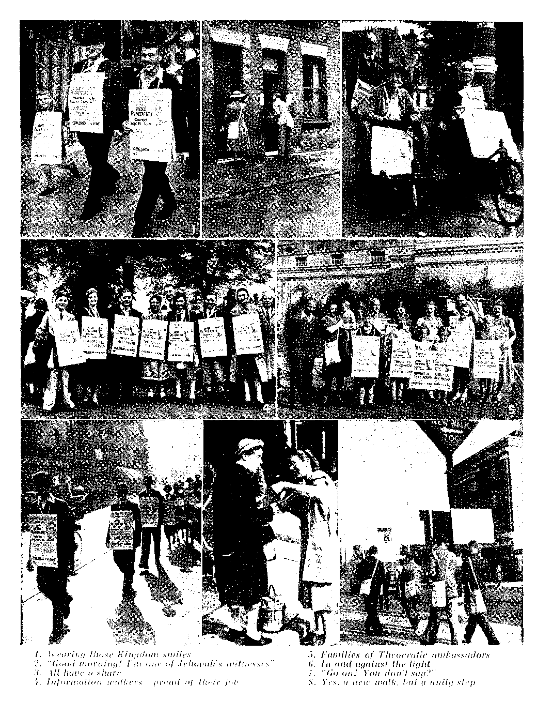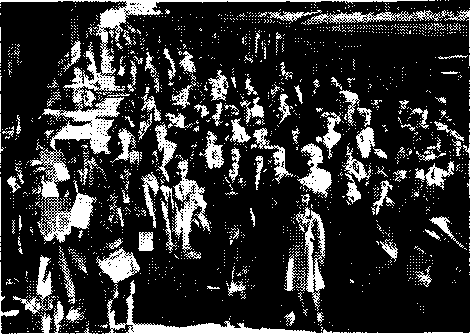Theocratic “Special” arriving from London
in some newspapers that there would he no cigarettes for Leicester people, as the witnesses would grah them all. They were compelled to swallow their words when it was pointed out that Jehovah’s witnesses do not smoke.
Malice once aroused was not slow to set in motion other slanders. One was to the effect that Jehovah’s witnesses must all he loafers and slackers seeing that so many could arrange to he at one place at the same time. Pointed references were made to “stalwart men and women,” and the advice was freely given that they might he better employed harvesting or making munitions. How could it he expected that the world could appreciate a zeal which would determine every one of Jehovah’s people to answer his call to worship at any cost or sacrifice, even at the “sacrifice” of their only week of holiday in the year?
One brother as he stood in the gutter was told by an irate passer-by: “You’ll do anything but work.” That brother is a Durham miner, engaged in the hardest toil that the Devil’s organization can impose upon human creatures. Such blind followers of the blind “god of this world” deserve to end up in the ditch they're heading for.
Another brazen piece of lying, worthy of Dr. Goebbels himself, or his teacher of the Vatican, was to the effect that Jehovah’s witnesses intended to pay for their “holiday” with the money thev received from literature placed with the people of Leicester. One brother, greeted with this accusation by a woman at the door, hastened to make known to her the true facts, whereupon she burst into tears, exclaimed: “It’s wicked!” and expressed herself as determined to lose no opportunitv of correcting this calumny.
While some cursed, swore, blasphemed—as did one crowd of men and girls heard chanting “Down with Jehovah” nor hesitated to seek occasions to offer violence—on the other hand there were many in Leicester who assuredly will shortly be found among the “great multitude.” Foremost among these will be some of the hospitable householders who took the brethren into their homes—and many of them into their hearts also. In some few cases, notably among the Catholic population, brethren were refused admittance to homes where they had arranged to receive accommodation, but in most cases the brethren were made heartily welcome. Some householders surrendered their own beds to brethren, others insisted on giving up their meat rations to provide a Sunday dinner for the visitors. Everywhere the account wras the same, of landladies and their families listening intently and intelligently to the kingdom message, expressing their appreciation, and promising to attend the lectures. Many a model study was conducted by the brethren with these householders during the evenings of their stay.
One lady who, though an invalid, surrendered her bed to a pioneer sister, said she was disgusted with the Leicester people, and she was not the only one. One Leicester lady, hearing of a supposed shortage of food, arrived at the De Montfort Hall with an offer to entertain six publishers to lunch each day. Two witnesses who asked the way to a cafe of a man in the street found themselves invited to lunch at his own home, with an invitation to come again.
A pioneer sister who got into conversation with a girl of about the same age at a bus stop found her listener so thrilled with the kingdom message that she asked if she could come “all day on Sunday.” She was assured she would be most welcome and, come Sunday, there they both were, strolling arm in arm through the De Montfort Gardens, setting a pretty conundrum as to which was the happier-looking of the two. A sister who took a dog that had been injured by a car back to its mistress placed literature with the lady and the crowTd of sympathetic neighbours, and arranged a model study for the next evening at the mistress’s house. Maybe Fido suffered in a good cause.
Two of the boys from Kingdom Farms found themselves received into the home of a wealthy Leicester business man. Host and hostess invited them to return for a holiday at any time, begged them to correspond, and declared: “As soon as vou walked into the house we said to each other. ‘Here come two honest men.’” A pioneer brother and sister as they parted from their kindly host and hostess heard ringing in their ears the statement: “We wish you were staying all the winter.”
It is the Lord, not his people, who has a controversy with the nations. Any trouble that occurred was not sought by the Lord’s people. Let the Leicester firebrands, both civilian and military, the “patriotic” agent-provocateurs who lacked but a flag to make the counterpart of their American brother-hoodlums, bear in mind that had they been dealing with any other people than Jehovah’s witnesses their city might well have been the scene of ugly deeds which would have sullied its name for a very long time.
Under emphatic Theocratic direction to avoid all disturbance at any cost, the brethren exhibited a discipline that was beyond praise. Chief source of provocation was the military element, well represented in Leicester, with its parade ground adjoining the convention grounds. The first sign of trouble, however, manifested itself not at the convention hall, but at “Camp Gideon,” which no doubt offered a more fruitful site for mischiefmaking.
On Thursday evening two sisters were returning from the farm nearby, whither they had gone to fetch milk to the camp, when they spied a handful of members of the Home Guard (a uniformed body recruited in each district, and trained to deal with enemy parachutists) crawling along close to some of the tents and flashing torches. Becoming suspicious, especially when a request to see their identity cards was not pressed, they hastily informed brothers who had not yet retired for the night.
The warning was timely, for a few moments later clouds of smoke were seen issuing from among the tents in the centre of the camp. Brothers who hastened hotspeed to the spot were just in time to see half-a-dozen men in khaki battledress dashing for the nearby railway line, some of them uprooting guy-ropes as they went. Some few tents were wrecked and their occupants, mostly women and children, were caused some discomfort.
Dense clouds of filthy smoke from home-made smoke bombs drifted across the camp for several minutes, and from them emerged another detachment of Home Guardsmen led by an officer who officiously, if somewhat agitatedly, demanded to see the identity cards of all present. At this point the police intervened, holding up a third body of Home Guardsmen who arrived down the road in cars. The Home Guard leader threatened to arrest all the brethren who could not produce their identity cards, but took no such action when a number declared theirs were in other parts of the camp. The Police authorities seemed satisfied that unauthorised work had been afoot, but the brethren, having provided them with the evidence of smoke bomb canisters and a khaki forage cap picked up on the camp grounds, and having been assured by a police inspector called to the spot that the incident would not be repeated were well satisfied wTith the night’s work. Altogether thirty soldiers of the Home Guard took part in this mischief between eleven and midnight. Thereafter the police kept a strict watch around the camp premises, and there were no further incidents.
Brethren on the spot had no doubt in their minds that the invaders planned to use the smoke screen as a cover to the despicable work of uprooting as many tents as possible, and causing chaos in the camp. But the Lord upset their evil designs, as he has done in far bigger things before, and will do yet again.
Checked at the outpost of “Camp Gideon” the demons thereupon transferred their fields of operation to the hub of affairs at the De Montfort Hall. On Friday night one of the brethren who acted as night patrol of the property guard encountered a small body of soldiers who had climbed the railings into the convention grounds, and who were hiding in the bushes. In the scuffle that followed the brother was knocked unconscious (he recovered in about twenty minutest, but assistance was on the spot at once.
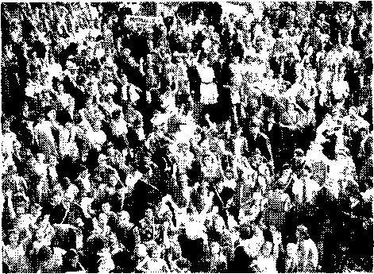Some newspapers call these “cranks”
A stalwart Bethel brother who learned how to take care of himself whilst pioneering in Southern Ireland, faced the intruders with a crowbar, and threatened to "bash the brains out” of the first one who moved (what a pacifist!). Not one of the six soldiers accepted the invitation and were thus held at bay until the police arrived removing the soldiers in the "Black Maria.”
The following night some civilians broke into the grounds and pinned one of the brothers, a night guard, up against the railings. Brethren soon came to his rescue giving one of the hooligans a good caning until he beat a retreat clearing the five foot fence in one jump. Finally on Sunday night the remnants of a querulous crowd which had growled outside the main gates most of the day removed the rear gates of the De Montfort Gardens from its hinges, and invited the brethren to attack them. Under this, as under every form of provocation, the brethren maintained a dignified and restrained attitude, and let their adversaries howl in vain. And so once again the demons were foiled.
Not a single item of damage was done to either the convention hall or the gardens, which the brethren had undertaken to protect. Perhaps the Leicester people who set up a howl because their hall was let to such a body of law-abiding citizens, who paid every penny that they were asked for it, will reflect in their more sober moments what might have happened to their property if their own demonized citizens had been able to incite the riot which their intention was to bring about.
One fact that stood out amidst all this controversy was the friendly attitude of the local police. All the convention officials who came in touch with them praised their courtesy and willing spirit of co-operation. The police of Britain are proud of their reputation for integrity, and although the war circumstances have brought into being organizations, such as the Home Guard, which in some degree are a law unto themselves, events at Leicester manifested that the officers of the law show no disposition to relinquish their role as guardians of the public safety.
On their part the Lord’s people amply demonstrated that they were anxious to do nothing to embarrass the authorities of Leicester. When complaints were voiced that the brethren were crowding workers from the tramcars during rush hours, and that they were denuding the cafes to the detriment of the latter, steps were immediately taken to silence the criticism. The brethren were requested not to patronise local restaurants, and the following resolution was passed and submitted to the press and published by them:
AIn view of the statement made in the local press concerning the inconvenience to the local townspeople by the witnesses of Jehovah, we wish it to be made known that we do not desire to interfere in any way with the ordinary transit of the city, and the convention delegates have decided not to use the buses and trams during the rush hours, namely 12 to 1 and 4 to 7.
"We have come to Leicester in order to worship Almighty God in accordance with the instructions set forth in the Bible, and we appreciate the kindness shown us by thousands of Leicester people both in their homes and in the door-to-door service. We wish to draw the attention of the people to Mr. J. Hemery’s statement made public this afternoon that we are not pacifists or against the prosecution of the war in this country.
*’W e like all (fliristian people in this country are supporting God’s kingdom as outlined in the prayer ’Thy kingdom come, Thy will be done on earth.’”
Again it must be emphasized that it was the selfish, goat-like element of the city which was at the root of all the troubles. The authorities were not unfriendly. True, the Leicester A.R.P. (Air Raid Precautions) Committee publicly washed its hands of responsibility for the brethren in the event of a blitz on the city—but how could they, in the midst of a faithless and perverse generation, be expected to know that Jehovah, having called his people to worship had power even over the dreaded Luftwaffe to prevent them from interfering.
While shoppers grumbled even while drawing their full rations - about the food of which they were being deprived, the Leicester Food Office raised no opposition, nor made complaint, sure testimony that no regulation within their jurisdiction was being infringed. As a matter of fact, on leaving the city Jehovah’s witnesses made a gift of 600 lbs. of bread to the Leicester Royal Infirmary and another large consignment was received by the Guardians (Committee for the benefit of the poor. Estimates suggest that well over £9,000 must have been spent by the brethren on beds and breakfast alone. No, the "city fathers” had little cause for complaint. With such, money does a lot of talking, and the brethren of necessity brought much of it to Leicester.
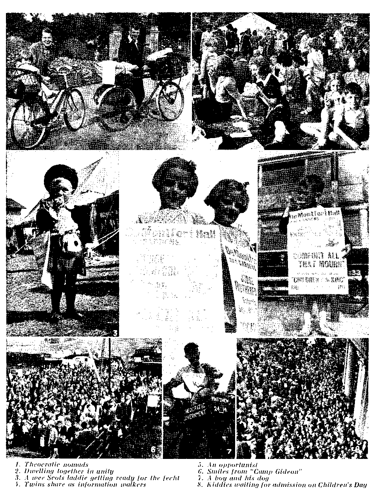
Thousands queue for tea
The transport authorities, and their employees, also had good reason to sit hack and feel satisfied. Not only did they reap a rich harvest of fares daily. hut on Sunday morning the Society took over the entire tramway system of the city and ran it for a few hours in the interests of the brethren. Leicester trams on a Sunday do not commence to run until well on into the morning, and the brethren had to be at De Montfort Hall by 9 a.m. for the first session. Drivers and conductors willingly volunteered their serv ices in return for double rates of pay. and the expenses were met by a standard charge of 6d. per ticket Io the brethren. The convention tramway dept, sold 6.000 tickets in advance for this special Sunday morniiiji service.
Even here Satan sensed an opportunity for misrepresentation. ■"Jehovah-ites Got Trams: Workers Walk” headlined the London “News Chronicle’ next day. Ton also note the implication that Jehovah's witnesses are not included among the ■"workers?''
The most significant encounter between authority of this world and Jehovah’s Theocratic organization came, however. upon the issue of pavement witnessing.
On July 22nd a permit was issued by the Chief Constable of Leicester for the street yvork to be done by the brethren. On W ednesday and Thursday of the cony ention upwards of 1,000 brethren yvere in the business district standing ten yards apart with booklets, magazines and folders, some bearing signs advertising the lectures of Saturday and Sunday . (The remaining 5,000 field workers were confined to the residential section of the city >. Such a spectacle unto men and angels speedily stirred up the wrath of opposers of the Theocracy. The usual tactics of coercion were employed, phonecalls and letters of protest pouring into the police headquarters.
The first reaction was apparent when Leicester local papers came into the hands of the brethren on Thursday evening, announcing the surprising news “Leicester police step in. Witnesses' pavement sales banned.” Later that evening A. D. Schroeder announced from the platform that the convention committee knew nothing of any ban. and that the yvork would go on in the same way on the morrow.
At an interview with the Deputy Chief of Police the next day the brethren pointed out that they held a letter from the (Chief constable authorising the pavement witness to be done in any part of the city provided no obstruction was caused. The Deputy Chief held that this authority was given to the local brethren and did not cover the increased activity of the cony ention. He yvas advised that the yyork would be continued, and that in the city centre the brethren would be spaced at intervals of thirty yards: furthermore that literature yvould be presented free to any interested person.
The day folloyving there yvere many furious looks east at the faithful brethren as they assembled once more for the street witnessing, and the newspapers of Friday night made another attempt to intimidate the bold men, women and children—for the courage of the pavement yvitnesses yvas remarkable by declaring that under a bye-law dated 1868 no pamphlet of any kind could be distributed in the streets, even free of charge.
The yvork. nevertheless, continued, and on Saturday a few names and addresses yvere taken bv the police. By now, feeling among the billy-goats was running very high, and it yvas almost as much as a citizen of Leicester dare do as to approach one of the witnesses in the gutter, for fear of being butted by his neighbours. Brethren in trams yvere subjected to open insults by fellow-passengers and conductors and conductresses, but through it all the Lord’s people kept right on doing the yvork their God commanded them to do. and Jehovah saw to it that his iny isible protectors were abroad in the streets to shield his servants from all harm.
This controversy, blazed abroad in heavy headlines by newspapers all over the country, will undoubtedly cause a great stir in all those parts of the country where pavement witnessing is carried out. \\ bile many in Leicester seemed to yearn for fascist action to deny Jehovah’s witnesses the right of freedom of worship and freedom of speech, there was evidence that some heartily disapproved of this attempt to gag the message of the Kingdom. One shopkeeper called from his shop: “Good luck! I’m glad to see you carrying on.’’ A young man after loitering nervously for some time approached a sister and said: “Please tell me all about it. I admire your pluck, and its wonderful the way you people are organized.” A Czech refugee, despite angry looks from passers-by, spent twenty minutes in conversation with a brother in the heart of the city, and promised to call at the bookroom for literature in his native tongue. One lady expressed her appreciation to an elderly sister in the words: “That message for only twopence?’
A school teacher met by a pioneer on the street work, wrote to her the next day as follows: “By the papers you seem to have been up against it in Leicester, but I expect you meet with a mixed reception in most places, and know it to proceed from ignorance of mind both organized and unorganized. Your reaction to it all shows dignity and charity, and will only result in making the man-in-the-street respect you.”
In fairness it must be said that not only the police, but the military authorities did their best to maintain order. The Major of the regiment stationed locally is understood to have expressed himself as willing to do all in his power to prevent any trouble from a military source, and there were many in khaki who expressed appreciation of the kingdom message. The Major sent several military police to patrol outside the convention grounds.
Two military officers approached one sister (one with a Bible in hand, which he always carried with him he said), and said they were keenly interested in the Theocracy. A. stalwart Cumberland farmer brother, a veteran of the last war, spent a pleasant time explaining why he had transferred his allegiance from earthly rulers to that of the Theocracy to two “tommies." One of the Home Guard who took part in the night raid on “Camp Gideon” expressed himself to a sister as follows: “I’ve spent twelve hours working in a factory today, and now I’m called upon to take part in this silly nonsense. It's all a lot of rot.”
Men in the uniform of Army. Navy. R.A.F.. Marines, Auxiliary Fire Services, police and A.R.P. wardens were to be seen mingling among the crowds during the public addresses, and one of the most dramatic declarations was that of a young soldier, new lv acquainted with the truth, who told how his commanding officer had granted him an extension of leave in response to a telegram expressing the wish to attend all the sessions of the Theocratic convention. This brother was loudly applauded when he affirmed his determination to stand for the Theocracy.
11 there was one fact that clearly stood out in the minds of the brethren as a result of the experiences at Leicester it was this -that the Lord, in fulfilment of his expressed purpose, is now carrying out a sharp dividing work in the earth. In this Midland city, typical of so many in Britain, by the time the Theocratic convention of Jehovah’s witnesses reached its close there were sheep and there were goats. A division was created there among the citizens, a breach that will never be closed. The mighty and unparalleled witness to the great Theocracy w ithin its borders has made that certain.
I hat there are goats now was amply demonstrated, and their blind and malicious hatred against those who came to them voluntarily with Jehovah’s message of life proxided a new insight to the Scriptural statement that they shall not be lamented when a just retribution falls upon them at Armageddon.
But the sheep! Blessed indeed are those brethren in the Leicester company w hose lot it will be to gather in the by no means small addition to the “great multitude. Lot entertained angels, the spiritual messengers of Jehovah, unawares, and therebv was saxed when Sodom was destroyed. 1 hese "other sheep of Leicester, many of whom doubtless little knew who thex were to entertain, or that once again the Lord was sending his messengers among men to try them, when they offered
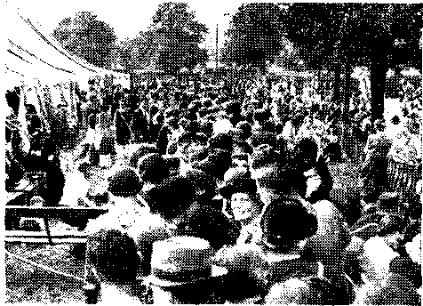Queue for luueh
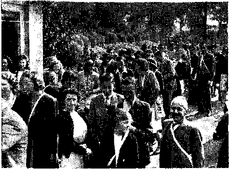Outside the book room
their beds and their food and their kindness to Jehovah’s witnesses.
Well, the Lord has promised them a rich reward, the great privilege of sitting down with Abraham. Isaac and Jacob in His kingdom. Thanks be to Jehovah that the day is not far distant when not only they but all of the Lord’s people will witness these faithful princes in full control in the earth, and all surviving mankind will rejoice in that blessed spirit of concord and peace and exaltation which was the keynote of this Leicester Theocratic convention.
The convention was given such national publicity that three leading Protestant clergymen from London, the “Revs.” A. D. Belden, W. Oyler-Waterhouse and Eric Tilton, sent the following telegram to the convention on the Friday:
CHRISTIANITY CALLING. UNITING
PROGRESSIVE CHRISTIANS IN ALL CHURCHES. CONGRATULATE JEHOVAH’S WITNESSES ON THEIR MORAL COURAGE AND BRAVE STAND FOR FREEDOM OF CONSCIENCE AND OPINION. WE DO THIS MOST WARMLY EVEN THOUGH WE DISAGREE WITH MUCH OF THEIR TEACHINGS.
Several of the Leicester clergy were present at various sessions. One “reverend gentleman” invited a brother into his house with the question: “What is it that you’ve got that we haven’t?” The brother lost no time in giving a witness. A Baptist clergyman who had attended several of the sessions and who had many a discussion with a brother staying at the same hotel insisted on being the brother’s porter carrying his bag to the railway station on the Monday morning.
Even in Parliament a question was asked the Home Secretary as to Jehovah’s witnesses holding this large assembly in war time at Leicester.
So much for the stir caused on the outside by this great assembly. Now for a report of the brethren themselves and the convention proceedings.
What of this city of Leicester? Brethren found it pleasant, clean and spacious, with broad ways, many fine buildings, a conspicuous absence of slums, and several beautiful parks. Radiating from the busy centre of the city were bus and tram routes to all parts with frequent services. Brethren were unanimous in speaking of the cleanliness of the dwellings which were their homes for the five days of the convention. The people revealed themselves as homely, and industriously engaged in the many factories which both in war and peace employ the greater part of the many thousands of the city's workers.
The first sight of the De Montfort Hall and Gardens was an experience eagerly awaited by the brethren. While they had heard much to enthuse them to keen anticipation of many rich pleasures to come, special stress had been laid on the marvellous provision the Lord had made for the great assembly together with its pleasant surroundings.
Brethren who walked up the rise from the railway station and came upon the wide and spacious approach to the Victoria Park must have experienced an anticipatory surge of expectance, which became a thrill of joy when they obtained their first glimpse of the convention grounds.
Built in 1913 and with Judge Rutherford one of the first to address an audience within it, the De Montfort Hall is a magnificent building, kept beautifully clean and fresh. The Lord could not have chosen a more fitting spot for His people, for in addition to the Hall itself, capable of holding 3,000, there was accommodation for several thousands more in a vast natural amphitheatre in the gardens adjoining. One of the most appreciated features incidentally were these same gardens, in which the brethren were able to stroll amid trees, and along grassy ways, flanked by attractive flower beds. The privilege of enjoying these gardens was one that was fully appreciated by all who attended, and one of the complimentary testimonies to the Theocratic spirit which inspired the gathering was that of the park keeper, who stated not a single flower was picked or even disturbed by any of the hundreds of children present.
Even the weather became ideal for this blessed event. The sun smiled by day and the moon beamed by night. The sun was so strong and hot the first few days of the convention that it seemed Leicester was going to be an exact duplicate of St. Louis even to the detail of a heat wave. For the five weeks prior to the convention the weather throughout the country was unsettled full of rain and showers and cold weather. Since the accommodation of the large audiences at the convention depended largely upon warm weather, the Lord blessed the event accordingly and all praise belongs to him for His smile of approval.
The brethren had heard much of Jehovah’s organization in preceding months, and now he graciously permits them to see it in full operation. By all that occurred both before and during this convention it was manifest that the Theocratic Government is indeed functioning under the direction of Christ Jesus: that it functions with a harmony that wrings tribute even from those that hate it; that this mighty organization of the Lord henceforth functions independently of every element of Satan’s world, which from now on it is IN A POSITION TO IGNORE; and that every effort of Satan and his forces to embarrass it the Lord turns, as ever, to their own confusion. And now the proof of these statements.
“Jerusalem,” cried the exultant psalmist, “is builded as a city compact together,” and his glad cry was echoed by every one of Jehovah’s witnesses who beheld how every minute detail of the assembly was planned and carried out without even a ripple of discord. The huge five-day programme of discourses, songs and declarations was carried through without a hitch, and in every case to the very minute. There was never an interruption, for the husky band of ushers took good care that anyone who even slightly resembled a trouble-maker did not even get a glimpse inside De Montfort Hall.
The many needs of the twelve thousand Theocratic publishers in the course of the day were admirably cared for. In the days immediately preceding the convention a body of pioneer brothers of the construction department—they included ships’ riggers, carpenters, works’ foremen and a master builder—erected the fifteen tents or marquees on the grounds. The two largest tents were 240 feet by 30 and 200 by 40. Every bit of the four acres of the convention grounds was utilized and laid out for the assembly. After the final erection of all the tents, paths and parking spaces the whole grounds looked like a circus come to town, with De Montfort Hall in the centre of a field of canvas all properly camouflaged. Aircraft flew many times over the grounds to check the camouflage which was finally adjusted to the satisfaction of the authorities.
These large tents housed the two catering departments; one on the north side of the grounds and the other dining tent on the south side. Two more large tents furnished sheltered seating for 4,000. Smaller tents were used to house the various departments necessary for the organization of the convention. Prior to the convention Leicester officialdom declared that tents of any sort were unobtainable as the government had taken them all over for the military. But there was a Theocratic government in the picture also, and these tents were found by the Lord’s grace and were brought from London on three ten-ton lorries.
All the catering was undertaken and supervised by the Society. Kingdom Farms furnished large supplies of vegetables including two tons of tomatoes. For six w’eeks prior to the convention stores of all kinds of unrationed foods were purchased and stored in two warehouses in Leicester. A local bakery firm, operated by people friendly to the truth gave close co-operation. However, the demand for baked goods was so great that he turned his bakery over to the Society which in turn supplied their own master-bakers from v olunteers, and so supplies continued uninterrupted. Not a soul went unprovided for, and that without imposing any burden upon the people of Leicester. The Lord supplied
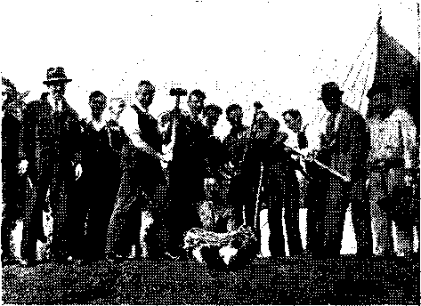Wilf. Emery and his gang of “heavies”
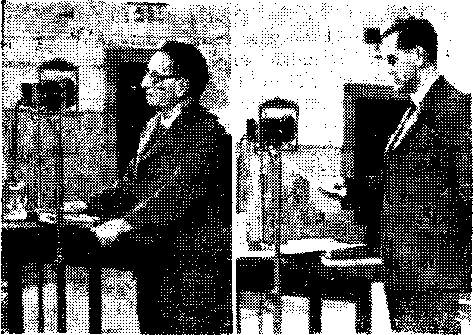3. HEMERY A. D. SCHROEDER
(By courtesy of ’ Picture Post")
every material need and the multitude was well fed. In view of all the war time difficulties the feeding of the brethren was providential bringing to mind Jesus’ feeding the five thousand.
At last V ednesday 2 p.m. was here. The glorious convention opened on time. The Hall was packed, the amphitheatre was full, joyfully seven thousand sang the opening songs in conjunction with the orchestra, chorus and organ. My! whal sweet praises were sung to the* Most High and whal volume! The chairman’s opening greetings were given followed by an outline of all coin ention field service activity. All these instructions were carefully followed. Now it was three o'clock, another song was sung and then came the first great feature of the convention—Judge Rutherford’s opening address. It was heard crystal clear throughout the grounds, hall, tents and amphitheatre accomplished through one of the finest sound engineering hookups in this country, all built, designed and operated by servants of the Theocracy. Everyone paid close attention, just as if the whole audience was sitting before Judge Rutherford at Si. Louis. (The three sets of recordings for this convention were flown over the Atlantic by transatlantic airmail shortly after the St. Louis convention. These were the finest and clearest recordings ever received of Judge* Rutherford's broadcasts, i
The subject of “Integrity,” with its new light on the Book of Job, was an unexpected thrill. Everyone was encouraged by' this revelation that the sufferings of that “hated” one, Job, who had done no wrong, pictured the sufferings of the Lord’s remnant and their companions today, and that a faithfulness like to Job’s would result in a reward as bounteous as he enjoyed when his integrity had been proved under severe test. The brethren duly noted the emphatic statement of Judge Rutherford that the issue was that of UNIVERSAL DOMINATION, and resolved henceforth to resist to the utmost the Devil’s mighty campaign to dominate the whole of living flesh. At the conclusion of this wonderful lecture the following cable was sent to Judge Rutherford:
7,000 YOUR BRITISH BRETHREN OPENED ASSEMBLY FOR WORSHIP TODAY. DELIGHTED TO HEAR YOUR VOICE AGAIN. GREATLY APPRECIATE YOUR TALK “INTEGRITY.” OUR ZEAL FOR THE THEOCRACY HAS BEEN THOROUGHLY AROUSED. WE ARE DETERMINED TO MAINTAIN OUR INTEGRITY COME WHAT MAY AND FIGHT AGAINST SATAN’S BID FOR UNIVERSAL DOMINATION. — LEICESTER THEOCRATIC ASSEMBLY.
\\ ednesday evening J. Hemery, vigorous and confident, jubilant and exultant, even as the president revealed himself, lost no time in communicating to his audience some of the reasons for his enthusiasm. The brethren hung upon his words as he stressed the statement, ““This is not our swan song,” rejoiced as he exclaimed. “We shall meet again next year. I don’t think it will be here in Leicester, for they don’t seem to like us very much,” and pondered deeply over his suggestion that Nazism was only a passing and preliminary phase, and that the great clash of the two opposing organizations is yret to come. The brethren were delighted to know of a probable further opportunity to contact those whom the present emergency of w ar holds in a tight grip with a “quick, sharp witness,” and were keenly appreciative of his exposition of the abundant qualifications of the faithful princes for iheir positions of authority in control of the new earth.
Following J. Hemery a discourse was given on "Zone and Regional Servants’ Duties” and a call given Io all brethren to give closer heed to organization instructions, to abide carefully within the fold and render that true obedience to the higher powers, Jehovah, the Theocrat and Christ Jesus, the King.
The morning of the second day was spent in the field service by nearly five thousand publishers. By* tlie afternoon a few more hundred brethren arrived at the assembly bringing the attendance on Thursday to 7,500. The brethren throughout the grounds listened carefully to the discourses dealing with “Pavement Witnessing,” “Study Groups” and the “Victory Song.” J. Hemery spoke again Thursday afternoon further developing his theme—The Theocracy now here. He elaborated on Daniel 2:44, “In the days of these kings shall the God of heaven SET UP a kingdom,” showing the “setting up” meant action just like a phonograph SET UP means running the lecture. The THEOCRACY is now here and taking ACTION.
Thursday evening after several songs and many interesting declarations, the com ention servant spoke on “Zone Assembly and its purpose”; the point being made that Jehovah was dealing with a people just as in the days of Israel, and that as in Israel it was necessary for the people to assemble together to gain the Lord’s instructions. Eor this reason it was vitally necessary for everyone to attend this great assembly for worship and for the same reason zone assemblies are of vital importance to be attended at least twice each year. The chairman concluded the evening session with a discourse “When The Righteous Rule.”
By Eriday the convention was gaining momentum and the attendances rose to 8,500 for the day. Another host of locusts covered the city during the morning in regular field service, the field service plans being that each day the same territory be covered. By placing two publishers with phonographs to do the house to house work on each block, two publishers on the street work with the magazines and two Information walking, in this manner of field organization it was possible to put five thousand brethren in the residential parts of the city and another thousand on the streets in the business centre. Thus Leicester, a city of 300,000, received a concentrated locust attack each day and every soul knew that Jehovah’s witnesses were in town holding a great convention.
Eriday afternoon the Convention Servant spoke on "Pioneer’s Place in the Organization.” 1,250 pioneers were seated in the front part of the Hall. W hat a stirring sight it was to see all those full time zealous warriors of the Theocracy. \\ hat a happy band! They gathered every shilling they could get to come to this great convention. The Lord saw to it that everyone of these full time scr-\anis attended this assembly for worship. A. D. Schroeder opened with a surprise by reading to this vast convention Judge Rutherford’s informal talk to the pioneers at St. Louis. Judge Rutherford’s words opened: “Well, it should refresh anyone’s heart to greet a company of real fighters, that are not only willing to fight, but to fight for the greatest thing that has ever been known or ever will be known, namely, the great Theocratic Government.” Applause after applause followed the reading of this speech. The most touching part which greatly moved all the brethren to unprecedented applause were the following closing words of Judge Rutherford: “You saw a supposed picture in the (St. Louis! paper the other day of an old, tall, baldy man—that picture says, ‘This is the leader.’ I am glad the Lord understands. He knows that this is not the leader, but this is just one of the boys fighting along with you. I was born to fight for righteousness, and by the grace of the Lord, 1 will keep on doing it. . . . Don’t think you are the whole thing yourself because you are a pioneer. XV hen you go, work a town, and work it up and get ready to leave; don’t leave until you have turned over to some zealous local witness for the Lord the full results of your work so that they can carry on. Keep on encouraging those who love the Lord, and want to do His will.”
The afternoon programme continued with further advice to the pioneers and several extremely interesting declarations from some of these front line fighters. A timely talk followed on the counsel and advice given in the May 15th Watchtower on “Noah’s Day.”
The Eriday evening session was opened by J. Hemery giving a review of the work in the British field during the past fifty years. He gave a brief history of the work in this country from its start in London about 1888. He stated that there were two brothers in attendance at this assembly who
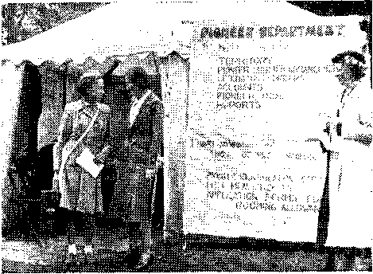Joining the full-time ranks
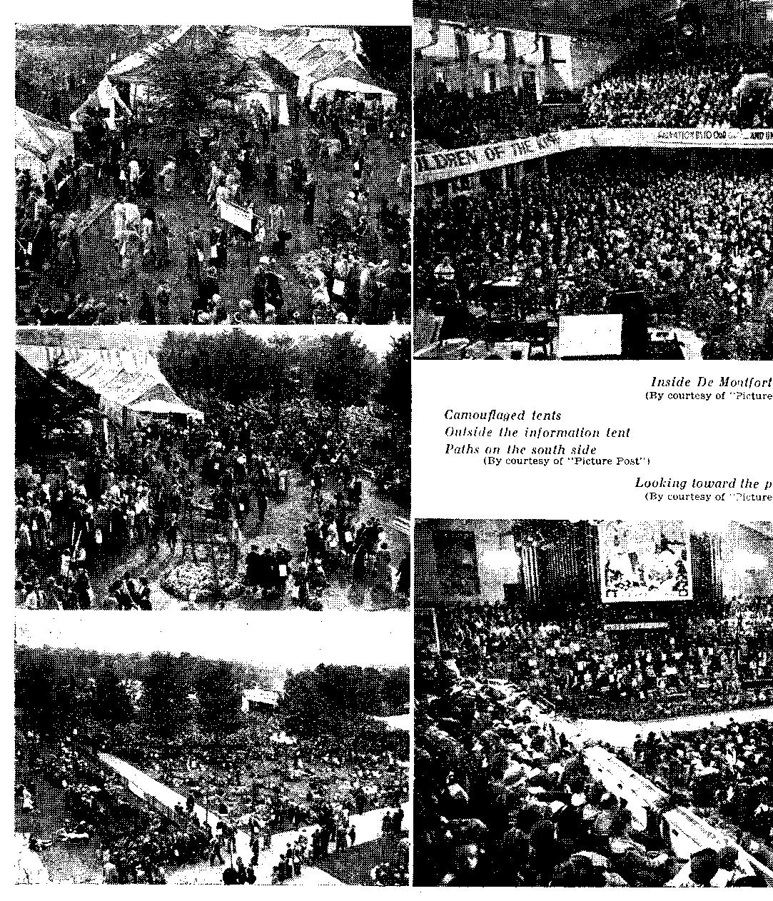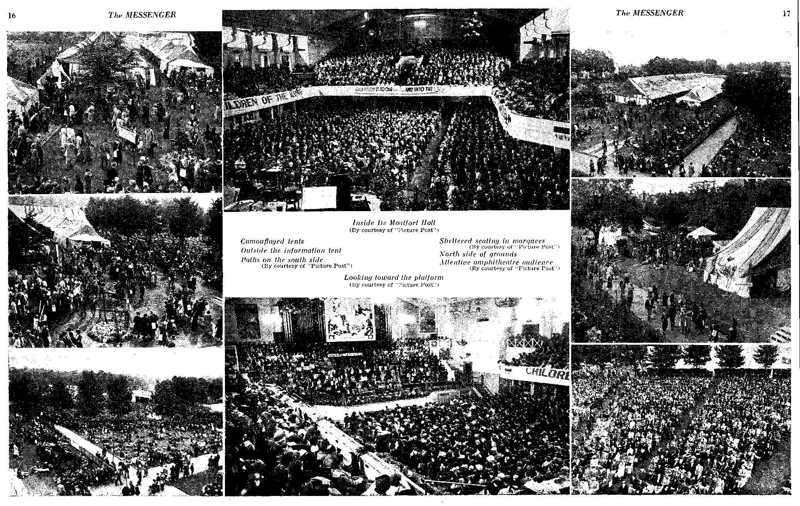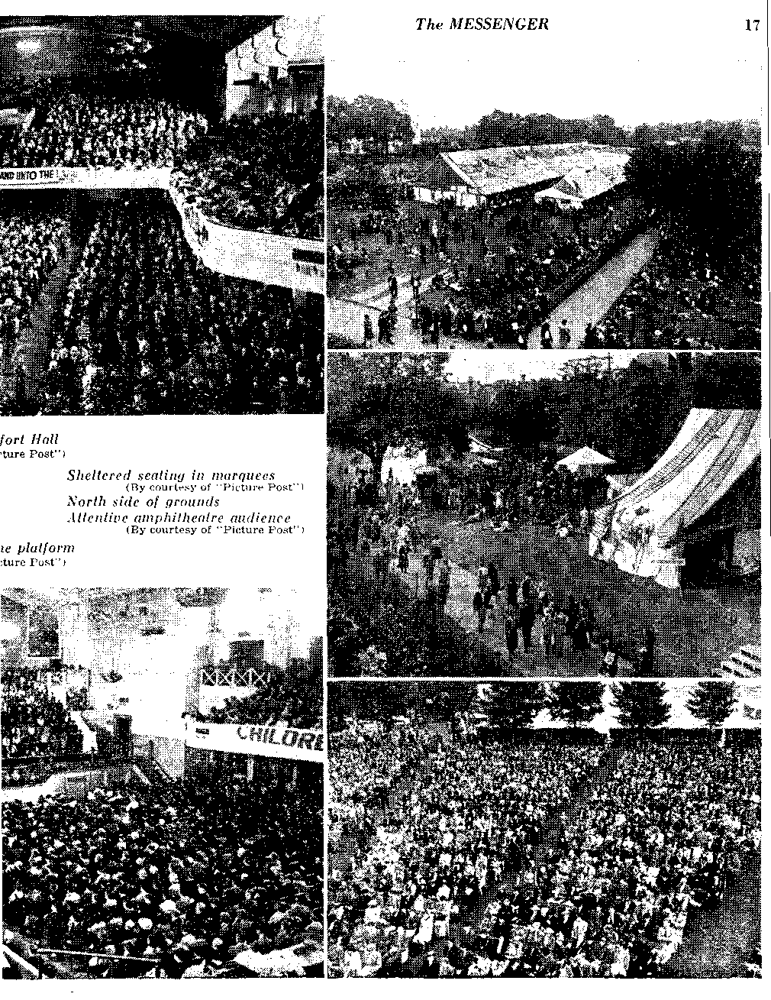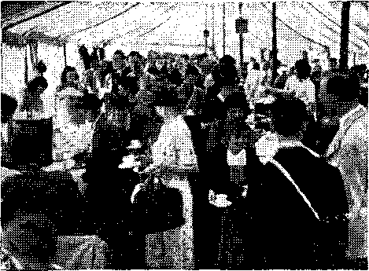Inside general catering tent
have been faithful in the work since 1888. (J. Hemery was one of the two). The evening session continued with a most instructive Theocratic service meeting conducted by four of the brothers from London. A discourse on ‘“Covenant Obligations” finished off the Friday programme.
Saturday, the big day of the convention, now arrived. Hundreds more of the brethren were rolling into the convention city. The attendances were now well over the ten thousand mark. The climax in the field service was reached when 6,177 faithful publishers were in the field facing the rising tide of resentment and opposition. The brethren hurriedly returned from the field, went to the dining tents for their lunch to get ready for an early opening of the afternoon’s session.
Promptly at 1: 30 the afternoon songs and declarations opened followed at 2 o’clock by a most instructive talk on “Advice to Kingdom Publishers.' Between 2:30 and 3 o’clock the vast throng were being assembled, marshalled and seated for the great public lecture by Judge Rutherford to be given at 3 p. m. on COMFORT ALL THAI MOURN. This was to be the focus point of the whole convention. An air of expectancy pervaded the entire assembly. The orchestra rendered a few selections. Then prompt at three the chairman made a brief opening announcement concluding bv saying that “we will now be tuned into the vast convention of Jehovah’s witnesses assembled at St. Louis, Missouri to hear Judge Rutherford’s great lecture COMFORT ALL THAT MOURN.”
Then burst forth over the speakers the closing refrains of the orchestra at St. Louis. The American chairman’s introduction followed, then boomed forth the clear, bold, pleasing and familiar voice of Judge Rutherford, as strong and better than ever before. Everyone sat spellbound, quiet, following every word being uttered. And when the magic name of Daniel did indeed fall upon their ears one could sense a great sigh of satisfaction wafted through the audience. What was that? “The king of the north” the Axis powers and “the king of the south” the British Commonwealth of Nations? Ah’ that was the key. For months many of the brethren throughout Britain had been wondering when the Lord would open up an understanding of the great prophecy at Daniel 11 and now here this precious great key was being presented to them. As the lecture continued a promise was given that a full exposition of Daniel 11 would be forthcoming in the Watchtower. The delight of the brethren knew no bounds and the applause at the conclusion of the address was thunderous. What a sense of deep satisfaction that the beastly combine known as the “Axis powers” was certain to end and fail in its efforts to dominate the world, and that the Theocratic Government which Jehovah was setting up would proceed to full establishment despite all that the Devil could hurl against it.
Immediately following this epoch-making lecture the chairman read the following cable which had come from the American brethren:
TO LEICESTER ASSEMBLY SAY YOUR FELLOW SERVANTS ASSEMBLED 115,000 STRONG AT ST LOUIS. BID OUR BRITISH BRETHREN BE VERY COURAGEOUS AND HOLD FAST YOUR INTEGRITY. THEOCRATIC VICTORY CERTAIN.
—JEHOVAH’S SERVANTS IN AMERICA.
To the already thrilled audience this cable from our American brethren brought forth another great shout of joy and applause which was tremendous. In reply to these loving greetings it was proposed that the following message be sent to our American brethren:
TO JEHOVAH’S SERVANTS IN AMERICA WE SAY THRILLED WITH LECTURE COMFORT ALL THAT MOURN. EAGERLY AWAIT END OF AXIS POWERS. WE WILL HOLD FAST OUR INTEGRITY TO THEOCRACY REGARDLESS OF CONDITIONS WHICH MAY COME. OUR DELIVERANCE LIES SOLELY LN THE HANDS OF ALMIGHTY GOD. TEN THOUSAND LEICESTER THEOCRATIC CONVENTIONERS SEND YOU GREETINGS.
This suggested cable greeting was accepted with a great shout of “ayes.” Then as one more surprise it was announced that copies of this great lecture COMFORT ALL THAT MOURN were now available in booklet form and could be obtained then outside the hall and in the grounds. This brought forth another tremendous applause and the meeting ended with a quick dispersal to obtain copies of this great lecture. Twenty-four thousands of this booklet were placed immediately following this climax of the convention.
Saturday evening the convention continued to newer heights. J. Hemery opened the evening session with a discourse on “Our Commission” as recorded at Isaiah 61. In Jesus’ day this only had a partial fulfilment but now in this day it has its complete fulfilment. He encouraged everyone now to press on courageously in carrying out this commission and to comfort all that mourn. Following this the brethren were again surprised by hearing the reading of another thrilling informal talk given by Judge Rutherford at the St. Louis convention. Judge Rutherford’s warm heart to heart talk was immensely appreciated. His description of the great trailer camp at St. Louis, his report of the opposition encountered in preparing for the convention at St. Louis, how "Fayther O’Hooligan" seemed to have a lot to say. What laughter and applause followed these remarks of his. “Itou know when Jesus was on earth, those religionists wore long robes. They didn’t have much lace curtains at that time: they wore philacteries, greased their head a great deal like the billies. And no doubt that is where Jesus got the thought that it was a goat class. So when he spoke about the goat class, he meant of the Jews that class of billy goats with long whiskers, long-faced, that smelled to the top of the mountain."
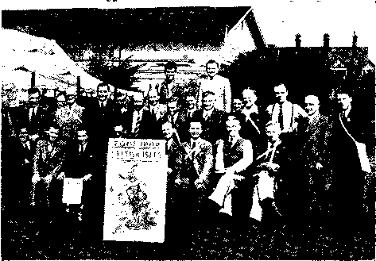SOCIETY’S ZONE SERVANTS
Full-time Itinerant Ordained Ministers of the Gospel
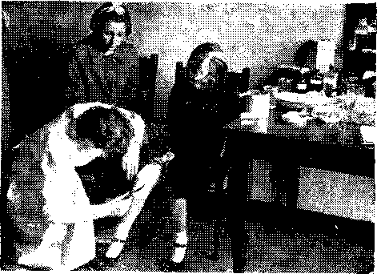(By courtesy of “Picture Post”)
It cannot be denied that the greatest moment of the convention was to come on the Sunday. Early Sunday morning while* most of Leicester was still asleep, Jehovah’s witnesses everywhere were busy getting ready to attend the nine o’clock morning session. All the tramcars in the city were specially engaged to run between 7:30 and 9. Only brethren who had special tickets filled these cars and had a direct ride to the hall without changing. Tramcar after tramear came up to the hall unloading the brethren. By 9 o’clock a large number were assembled for the first discourse. This talk dealt with instruction and proper training in the way of the Theocracy. This talk was followed by another taken from the “X ictorv Song."
At ten o’clock the De Montfort Hall w as cleared to make ready the reserved section for the children. This was CHILDRENS DAX at the convention and there was great excitement amongst the children and their parents. The information that at this convention the Lord had some special provision for his little ones had been received with keen interest and expectation, and special arrangements had been made to register all children between the ages of 5 and 18, Each child or family of children had a special green card entitling them to have a seat in the reserved section.
There was every indication that the children too realised the importance of the occasion. They no less than their parents were keenly desirous of registering at the appropriate booth, and one could trace in the demeanour of many an appreciation of the fact that Jehovah yvas henceforth to deal with them as individuals, a realisation which gave them pleasure to think that the Almighty did not disdain to accept the service and devotion of even the tiniest one.
Given the place of privilege at the front of the hall the young people, boys and girls, tall schoolboys and diminutive Scotch lassies in their picturesque kilts, some grave, some gay, many of them sisters and brothers after the flesh, and all of them after the spirit, filed through the front door of the hall, presenting their tickets and then ushered to their special seats. They presented a scene which could not but fill the heart with praise to the great Theocrat. At the front door they left their parents, then eyes forward with great expectation they tripped through the hallway into the hall just as if they were marching right into the kingdom. By 10:45 all the two thousand children found their seats filling the entire ground floor of the hall and also filling the first section of the balcony. The remainder of the hall was open only to the parents of the children. What a moving sight it was to behold those two thousand little hearts of gold beating excitingly on this momentous occasion. Those on the platform who were privileged to behold this sight found lumps in their throats and tears of joy filling their eyes.
The orchestra of forty-five musicians, the chorus of 250 and the organ led the entire audience in several songs among which was the beautiful appropriate song “Children of the heavenly King.” Promptly at eleven an entire audience visible and out in the Gardens amounting to over twelve thousand souls were seated and ready for the introduction of the great talk by Judge Rutherford on “Children of the King.” Presently the closing strains of the St. Louis orchestra could be heard, then the American chairman was heard to introduce Judge Rutherford after which a great thunderous applause was heard joining with the St. Louis throng.
Judge Rutherford’s voice, full of tenderness and loving kindness, came forward as clear as ever. His words were eagerly followed by all. He told how the Theocracy was a paternalistic government which would administer righteousness to all those under it. How it is that the princes will soon return to properly advise and teach the children. That the children should put their full trust in these princes. He also showed the duty of the parents to teach their children and what duties the children have before the Lord. Judge Rutherford also gave a brief description of what conditions will be like in the earth under the full reign of the Theocracy. How there will be beautiful estates and dwelling places for the children of the King that they and the animals living together in peace will all praise Jehovah’s great name. Then Judge Rutherford asked all the children to stand up while he put some questions to them. Everyone of the two thousand children stood and accordingly pledged their unwavering allegiance to the Theocracy and to have a desire to share in its service, putting in six hours a day in the work. It was wonderful to see their great enthusiasm for the Theocracy. It brought tears of joy to the parents and others who witnessed this great event. Then Judge Rutherford gave them a surprise announcing the new book Children. My! what a pleasant surprise that was. Two large posters with the picture of the new book were immediately revealed to the children from the platform. At the close of this wonderful lecture the children were told that Judge Rutherford had made arrangements for each one of them to be given a present of this beautiful new book as soon as it was completed by the London printers. Their copy would be sent to them shortly. However, it was announced that a series of coloured attractive study sheets had been designed to aid in the studying of this new book and that these were now ready for the children. Calmly and obediently all the children filed up in pairs on to the platform in two streams receiving their gift copies. They all behaved themselves beautifully, each one thanking with a smile as they received their gift. What a precious lot these children of the King! How could one help but give praise silently in prayer to the great Theocrat.
Investigation after the lecture was completed revealed that these young subjects of the Theocracy had lost nothing of the significance of the words addressed to their ears especially. Most striking proof was the enthusiastic manner in which they spoke of meeting the resurrected princes, stating with some decision whom they especially desired to meet; Moses being an especial favourite. The study sheets for the new book were welcomed with no little delight, and perused enthusiastically at once, and one and all expressed themselves eager for the opportunity of studying the new book.
And here, perhaps it may be appropriate to speak just briefly of one or two of these “children of the King”—to tell of the thirteen-year-old boy who travelled with the brethren from Kingdom Farms, after taking a stand for the truth independently of his family, and who stayed up till
1. Signs department had a busy time
2. Service department
3. Their’s was a monumental task
'i. Satisfying pioneer appetites
5. Theocratic Hospital dealt with 720 patients
6. A full stockroom—this spectacle soon vanished
7. The children’s registration squad
8. Volunteer service booth provides convention jobs
9. Book your homeward journey
The territory tent provided the “four times round” work-out
late at night expounding the Scriptures to his Leicester host and hostess; of the fourteen year old daughter of a zone servant who was the youngest pioneer to enrol at the convention, and of another girl of the same age who had already spent fourteen months in the full time service: of the eight year old brother from Stockport who spent 66 hours in the field service during August and refused to salute his headmaster with the rest of the class: of the eleven year old hoy from Plymouth wl>o conducts model studies on his own with adults: of the eighteen year old brother who is a company servant; of the twelve year old Scottie from Glasgow who put in 150 hours of field service during August.
And what of those families where the parents have indeed brought up their children in the nurture and admonition of the Lord? It was a great cause for rejoicing that there were so many of these at Leicester, t ypical of them was that Theocratic family from Edinburgh in which the youngest of four children, aged six, puts in twenty-five hours of field service a month, and the daughter aged thirteen spends some twenty hours a week in a similar manner. In another family all six children are regular Theocratic ambassadors, including eight-vear-old twins, who have been going from door to door for the past two years. All records are probably broken by the parents with seven children from Epsom, who regularlv every Saturdav evening set a fine lead to other publishers of their company by presenting a united front of nine on the pavement witnessing. Youngest kingdom publisher in Britain is probably three year old Henry indie, a wee Scots laddie, who often goes to the doors by himself, saying: “\\ ould you like God's book for a shilling?'' and who tells the other children: “I'm a Jonadab. and you’re not.’’
Judge Rutherford’s address to the children, both young and old, did not by any means exhaust the joys of the final com ention day. J. Heniery opened the afternoon session giving his final convention talk for one hour. He talked on the beautiful subject of the “Holy City.’’ As fresh, clear and vigorous as ever he instructed young and old on this vital subject of God’s royal organization. After an intermission of a song A. D. Schroeder delivered a public statement answering the many press attacks that Jehovah’s witnesses are subversive to the interests of the State. He also showed how the banning of the work in the Dominions and the Colonies was due to the conspiracy of the Roman Catholic Hierarchy. He closed with these strong words:
“Let it now be clearly known to all, that all the publications published by the WATCH TOWER BIBLE & TRACT SOCIETY hold loyally to the Bible and the Gospel message and definitely do not incite riot, disloyalty, insurrection, disaffection or revolution. These books and booklets are expositions of the Scriptures and in the Bible we have clear cut command not to take up carnal weapons or to use methods or do anything that would disturb the peace of any community. The incontrovertible facts are these — That Jehovah is the great THEOCRAT and his law is supreme. Everyr Christian whoever he mav be or wherever he may be must recognize and obey Jehovah’s law first. As citizens living under the laws of any nation, we gladly keep in harmony with such laws so long as such laws do not contravene the divine law. We proclaim without equivocation that Jehovah’s THEOCRATIC GOVERNMENT alone will bring peace, prosperity and blessings to obedient mankind. W e have the inalienable right to proclaim such good news for the benefit of all lovers of righteousness and that is our commission as Christians.”
Thereafter the following declaration was presented and unanimously adopted bv the entire convention:
D E C L A R A T I O N
Fen thousand Jehovah’s witnesses assembled in convention in Leicester hereby declare their purpose to continue to witness to the establishment of the THEOCRATIC kingdom of Almighty God, and to maintain their integrity in the commission given to them by Jehovah, as stated at Isaiah 61:1-3.
We affirm our faith in the Holy Scriptures as the ord of God, and our fullest confidence in the unfolding of his prophecies given to us for our salvation and for his service in these last days.
Vi e declare our conviction that JEHOVAH, the GREAT THEOCRAT, has already set his king upon his holy hill of Zion (Psalm 2:6) and that Jehovah is now bringing the nations of the earth to his judgments (Joel 3:2: Zech. 14:2) also that by his witnesses he is giving the nations warning of the crisis of Armageddon, near at hand, and, hy the same means is giving the peoples of good will towards God and righteousness the opportunity of salvation, and the blessings of life in happiness and peace in that kingdom, soon to be set up on the earth; that people of good will proving their faithfulness to God will have the privilege of carrying out the Divine Mandate to fill the earth with a righteous race of people to the glory of Jehovah.
\\ e deplore the actions of the Dominion Governments of the British Commonwealth of Nations and of the governments in certain of the Colonies, in banning the service of God and this proclamation of the gospel of the kingdom.
Aware that these repressive actions are in the main the result of Roman Catholic influence and pressure, and that the Papacy is Satan’s chief agent in the earth for the suppression of the truth of the Holy Scriptures and is seeking to get all men into its bonds of darkness, we declare that we shall not cease to witness against it. by the means which God has provided that men may know of this scheme of the Devil to blind them to the good news of the THEOCRATIC Government. W e aver that Jehovah’s witnesses are loyal subjects in every land, that the witness they give is never “subversive" as its enemies declare; but the message thev proclaim is one of Hope for all men of good will who love Almighty God.
There was yet to be one more high light of the convention. That was the announcement of “Your New Work.’* A special letter was read from Judge Rutherford’s office outlining the new plan of action for the British field. Every word of these new plans was devoured. Our new work for the new vear is to consist of a nation-wide home Bible study campaign. The days of giving a warning to the nations have passed: now a constructive work of specially feeding and teaching the people of goodwill must be undertaken. This announcement brought great joy and delight to all the brethren. How generous it was of the Society to appropriate £12,000 for the next six months to assist the pioneers in this new concentrated study campaign. Trulv the days are now here to feed the Lord’s sheep. The brethren gave a shout of “ayes” requesting the following cable be sent to the President of the Society.
TWELVE THOUSAND ENTHUSIASTICALLY HEARD CHILDREN OE THE KING. TWO THOUSAND CHILDREN IDENTIFIED THEMSELVES FOR THE THEOCRACY. NEW WORK FOR BRITISH FIELD ANNOUNCED. ALL THRILLED TO UNDERTAKE NEW WORK. PIONEERS SPECIALLY THANKFUL FOR LORD’S GRACIOUS PROVISION.
Sunday evening this grand and glorious convention was brought to a close with four short and timely addresses. All the brethren felt indeed that the Lord had spread a rich table of spiritual food for them during these five grand days of assembly. As one large household ten thousand British brethren learned to dwell together as a compact city under paternalistic Theocratic conditions. Their hearts were full of gratitude and thankfulness to the great THEOCRAT for this abundant provision for their spiritual welfare in these days of great tribulation. Every one returned homeward with a keener determination to press forward in the “strange work” while it is yet possible and before the night of Armageddon sets in.
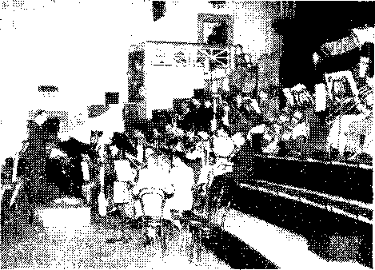Concent ion Orchestra
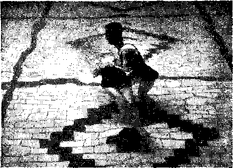Immersion—one of 761
In closing there are several items of organization to report to make this review complete. Sunday noon 761 brethren symbolized their consecration to the Lord. This was the largest water immersion ever undertaken in the British field. Three swimming pools had to be engaged to accommodate this large number. It was inspiring to witness this great act of faith on the part of so many new ones who are now fleeing to the “cities of refuge."
The field report for the four days of field service show that 6,177 different publishers shared in the service. 377 bound books and 11,161 booklets were placed in the field. 24,816 hours were spent in the service and 2,095 magazines placed in the streets. The sound attendance with the phonographs and sound cars amounted to 7,016. 478 back calls were made during the convention upon people of good-will. This is a splendid field report considering the great opposition encountered in the field. In addition the new booklet Model Study No. 3 was released during the convention of which 6,000 copies were placed. The new booklet Comfort All That Mourn was released on the Saturday and everyone available was placed, namely. 24.000 copies. Thus a grand total of 41,538 books and booklets were placed at this assembly for worship. Truly a mighty witness.
The accommodation department worked full speed throughout the convention. Everyone of the ten thousand visiting brethren in Leicester were supplied with a roof and a pillow. These brethren worked valiantly and hard, having to overcome many difficulties. The volunteer service booth classified and assigned more than one thousand brethren to convention organization duties. All those assigned to duties worked well and hard. Much of the success of the convention depended on these brethren faithfully performing their duties. There was no difficulty in getting the hundred night guards every night to watch and safeguard the Theocratic interests. The brothers were eager for this trusted privilege of service and to fight the demons. The brethren in the catering department worked nearly night and day to adequately arrange for the daily feeding of such a multitude. The Lord bless them for these great efforts and acts of devotion. The band of 300 ushers did a splendid job. Likewise the hospital staff of twenty which handled and treated 740 cases. Special treatments and examination were given to pioneers to enable them to be fit again for much Kingdom service in the future.
The Press Department served twenty-nine reporters, mostly of the national press. One was a reporter who hurried to Leicester from London to cover the story for a leading American magazine. A number of these press men expressed appreciation of the consideration shown them, and it was obvious that some were greatly impressed by the orderly, dignified and happy spectacle presented by the convention crowds. More than one reporter expressed his desire to have given a constructive report of the assembly and a truthful account of the stand of Jehovah’s witnesses, but stated that the Editor’s blue pencil had caused his story to be unrecognisable, when it appeared in print. One affirmed that the convention was the most marvellous thing he had ever seen.
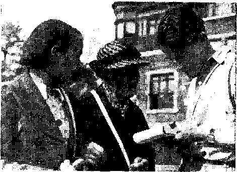Interviewing an 84-gear-old pioneer
FOLLOWING is given a brief resume of Judge Rutherford’s five major speeches delivered at the St. Louis THEOCRATIC ASSEMBLY which likewise were presented by recordings and reading at the Leicester Assembly.
Judge Rutherford’s opening speech was entitled “Integrity.” Never before this was the primary issue for determination made fully clear to God’s covenant people, to wit, UNIVERSAL DOMINATION. The test of Job’s integrity was only incidental thereto, just as the test of the integrity of those whom Job pictured is only related to that issue. The drama of Job was recorded in the Bible for the benefit of those today living who were foreshadowed by him, to wit, Jehovah’s anointed remnant of witnesses and their faithful earthly companions, the “other sheep.” Never before was it more necessary than in these days of rampant demonism for such to maintain their integrity toward God, even as Job maintained his for our example. The faithful prophets and witnesses of old maintained theirs, and are included in the class of innocent, blameless ones pictured by Job, and a brief record of them is given in Hebrews 11. God will resurrect them shortly in due time.
The drama of Job is fulfilled at the end of the world, where we now are. The facts today completely fulfill Jesus’ prophecy at Matthew 24:9 concerning the persecution of devoted Christians at the end of Satan’s world. Now' God’s approved ones must hold fast their integrity and must fear the King of The Theocracy. We see the end is at hand! Satan has blinded man by religion. Religion has caused all nations to forget God. The demons, of which Satan is chief, are now fighting against The Theocracy and God’s remnant who announce it. Satan is wroth, knowing that the final battle to determine the issue of universal domination is at hand. “We must hold fast our integrity; and this, by God’s grace, we can do by refusing to compromise with any part of the demonized organization of the enemy. We must and will be entirely, wholly, unreservedly and completely devoted to The Theocratic Government by Christ Jesus. We can have no part in and nothing in common with Satan’s organization. We are wholly and steadfastly for The Theocratic Government, and here, by God’s grace, we will remain. We know it shall vindicate Jehovah’s name and bring deliverance to all who love righteousness and who serve Jehovah under his righteous government.” (The full text of this address has now been published in the August 15 issue of The Watchtower. You will review it with profit.)
On Friday Judge Rutherford greeted the large number of pioneers assembled at St. Louis. He expressed it as a privilege to greet such fighters for The Theocracy, and that the activities of such a band as these must “make some of the ‘old woman’ mighty sick.” Pioneering men fled from Europe to America to seek and establish here freedom of speech, of assembly and of worship of God; they never imagined that such freedom would ever be hampered here as it is today in this land. This is all traced to religion and its allies. When these have finally closed down on our work here and cry “Peace and safety!” then a mighty explosion will occur and blow off the lid. “You pioneers are in this witness work not for selfish aggrandizement, nor to make a name for yourselves, but for the Lord’s name’s sake.” Isaiah 62:10 includes a command for the pioneers: “Go through the gates!” The gates are open for all now, particularly the Lord’s “other sheep.” “Prepare ye the way of the people!” This it is your privilege to do by telling them the truth. “Cast up the highway!” That is, to walk in the Lord’s wTay of righteousness. “Gather out the stones!” These are religion’s stumbling-stones; gather them out by taking to the people God’s Word. “Lift up a standard for the people!” What standard? Not Hitler’s swastika! The flag of America is a dignified and beautiful symbol, whose real meaning is “freedom” and “rights” of free men. Demonized flag-wavers try to force you to bow dow’n thereto in violation of GOD’S law. Such ones are the first to violate the laws of the United States. “I say to the people of Missouri, where I have fought for the principles of democracy,because I believed them right: ‘Jehovah’s witnesses have the highest respect for what the flag represents, but, by (rod’s grace, they will not bow down to ANYTHING!’” ( Applause) You pioneers are real liberators of the people. When you go out from this convention you will have lots of scoffing, reproaches and ridicule, but not by honest men and women. Rejoice in tribulation. Don’t think you are the whole thing because you are a pioneer. Keep on encouraging those who love the Lord. “NOW GET BUSY!”
When Judge Rutherford strode to the front of the platform at St. Louis he beamed at the sight. Said the chairman by way of introduction. "‘You have come to hear a man who loves God’s Kingdom tell you about ‘CHILDREN OF THE KING’ Judge Rutherford.”
The speaker then began in a calm, clear voice, as of a father quietly instructing his own children at home in obedience to the divine command. Early he described the Paternal Government of Christ Jesus, “The Everlasting Father,” when “there shall be no more religionists, no more politicians, no more commercial gangsters.” (Applause) The enemy shall be pushed out: “let the gangsters take notice now and begin to move!” (Applause) Those surviving Armageddon were pictured by Noah’s sons surviving the flood, and they may never die. “That’s the hope of you children.” (Applause) Now the children are telling forth the Kingdom message, but “the religionists with their long robes and greased hair and lace-curtain skirts try to make you keep still.” (Applause) Such religionists are the ones ‘who have been the defamers of God’s name, but his faithful witnesses have continued on, regardless of such religionists.’ (Applause) “They will go down in defeat, biting the dust as they go.” (Applause) “Probably some of you are listening in. [Applause] Stop kissing the toe of a man. and kiss the toe of the King. [Applause] Quit making jackasses of yourselves and dress yourselves like men. ]’Applause) Christ’s kingdom is marching to complete victory, and let all of them take notice today. [Applause] The Lord says the fear of man leads into a snare, and they are already in. '
The judgment of the nations is now on, and the Lord is separating the “sheep” from the “goats, “those billy goats that smell loud." (Applause) The “sheep” will inherit on earth the blessings of the Kingdom. They will hate dominion oyer the animals as Adam first had it. “and it will be nice for these birds and animals io become friends of you children.” (Applause) Ezekiel 34:25 describes the safety then, so that they "shall dwell safely in the wilderness, and sleep in the woods”: "and some of them are learning it here now (meaning those unable to find rooms or those at the trailer camp). (Applause) They shall be children of the King, and he will hr* their King-Father. The earth belongs to Him by right of purchase, and they will hold it in trust as his children-subjects and have part in beautifying it. Then the divine mandate shall be carried out, to fill the earth with a righteous, perfect offspring, and this by marriage and childbearing. “Some of these desecrators of His name claim that they only have the right to say who shall get married”: but they are presumptuous. In the Kingdom the “great multitude w7ill look to the Lord to guide as to selecting each a mate for himself. “Why, then, should a man who has the prospect before him of being of the great multitude now tie himself up to a stack of bones and a hank of hair?” (Applause).
Then timely words were addressed to the parents of the children, especially any who “send your children to those devilish movies to learn all the wicked things. Keep them at home and teach them the truth. The child that is encouraged by its parent to spend time in those movies that adulate religion does not show any real love for his own child.” Parents should “teach their children concerning The Theocracy. LN THIS DO NOT FAIL!” The children should keep always in mind Ephesians 6:1: “Children, obey your parents in the Lord.” “If your parents are not devoted to the Lord, then you had better get somebody else to instruct you.” (Applause) “You may soon meet Abraham, Daniel and other faithful men of old who shall be here as perfect men.” (Applause) Matthew7 8:11 says: “Many shall come from the east and yvest, and shall sit down with Abraham, and Isaac, and Jacob, in the kingdom of heaven.” To “sit with them does not mean to be inactive, but to rest in complete confidence with them, knowing that they are right and, being with them, you are walking in the way of righteousness.” Hear the command of the Lord written in the Bible at Revelation 22:11 to “Come!” "Come where? Come and take your stand firmly on the side of The Theocratic Goy ernment, if you would live.” (Applause* The world to come is described at 1 Peter 3:13 as a new heaven and earth. Those resurrected faithful men of old. in the visible rule as princes, will be the “new earth,” and “these princes are due now any day!” (Applause) All the nations are now afflicted with war, famine, pestilence, sickness, death, and RELIGION, but under Che Theocratic Goy ernment “the people shall work together exactly as von see upon these grounds.” (Applause) Then Psalm 148:10-14 was finally quoted as a grand climax, bidding all that liye. beasts and fowl, kings (Christ and his church), and princes and all judges of the earth, both young men and maidens, old men (Armageddon survivors), and CHILDREN (born of the great multitude), to praise the name of Jehovah.
The speech concluded. Judge Rutherford fixed attention directly on the children before him, commenting that “consecration is an individual matter: no one can consecrate for you. A question is about to be propounded to each one of you. All of you . . . children who have agreed to do the will of God and have taken your stand on the side of his Theocratic Government by Christ Jesus and who have agreed to obey God and his King, please stand up.” (The children before him arose as one body. I “Behold, more than 15,000 new witnesses to the Kingdom!” ( Applause I “All of you who will do what you can to tell others about God’s kingdom and its attending blessings, please say Aye.” (Cry, “Aye!” I (Applause) “If you had an instrument in your hands that you could use to the honor of Jehovah and learn of his kingdom, would you use it?” (A unanimous “Yes!”) “Then be seated, and I will tell you about it. . . The Lord has made possible the preparation of this book as a message for you (holding up the new book). (Great, prolonged applause) The title of this book is‘CHILDREN.’ (Applause) There are registered at this convention, and I see before me, more than 15,000 children between the ages of five and eighteen. All of those children have stood up and have likewise signified their devotion to the Theocracy. Thank God that I have come to this day when it is my privilege to speak to such an army of young men and women taking their stand on the side of Jehovah! When they try to silence you, the Lord will put his hand over you and see to it that they do not silence you. Millions of persons of good-will to this hour desire to know the truth, but the long-skirted, lace-curtained religionists will try to keep them in the dark.” The book called Children, will do a work of enlightening them.
Concerning the faithful ones of old who shall be resurrected, Judge Rutherford commented: “Soon you will see Barak and Deborah (I got a picture of her in this book), and when you see her you will love her very much. She is a real woman, and will be able to give you girls proper advice—you girls who are looking for a husband. W hen you see Daniel. David, Moses and all the prophets, listen to what they have to say, and they will properly advise vou boys and girls. I am going to have handed to everv one of you 15,000 children one of these books as a gracious gift. I ask that you first study it faithfullv. Ask someone else to sit with you under the shade of a tree and study that which leads to life and endless blessings. ... It is your privilege between now and before the day school opens to xpend six hours a day in taking the book Children to others.” The parents should encourage their children to do this verv thing, if they would hat' them live.
(airtons of Children that had been deposited in The Arena were now opened, and Judge Rutherford instructed the children how to come and each get a copy thereof, those in the rear half of The Arena marching in two columns out through a side exit, and those in the front half of The Arena marching up over the platform and out through a rear exit. As the march began, the orchestra (minus all its children instrumentalists) struck up and rendered songs “Children of the Heavenly King,” “The Sword of the Lord and of Gideon.” and “Who is on the Lord’s Side?” while the vast audience sang. Never was there a more moving sight in these “last days.” Many, including strong men, wept at the demonstration. Receiving the gift, the marching children clasped it to them, not a toy or plaything for idle pleasure, but the Lord’s provided instrument for most effective work in the remaining months before Armageddon. What a gift! and to so many! The manner of releasing the new’ book Children was an outright surprise to all, but the almighty hand of the All-wise One, Jehovah, was in it, and the maneuver was most blessed indeed. Thereafter Children, the author’s edition, was disposed of to adult conventioners, on a contribution.
When, next, Judge Rutherford came on the platform, he talked extemporaneously, but the unspeakable blessing the Lord bestowed in the morning appeared to have put him in the best of condition and filled his heart and mouth full of words “in season” and “fitly spoken.” For forty-five minutes the audience spent a most delightful time listening. Said Judge Rutherford: “It is not exactly a new work, but it is putting on a little more steam for the final roundup.” Then concerning the book just released, he added: “We had on the grounds this morning only 40,000 of the autographed edition . . . But 1 am glad to tell you that, while that 40,000 are gone, there is another 150,000 copies on the grounds ready for use. (Applause) So you will have 150,000 on the grounds here to start with NO\X , and I think it might be well for two or three thousand first-class workers to go into the St. Louis field and net those in the hands of the people here who want to know7 something about it before you go awav. (It developed that more than 3.000 persons of good-will turned in their names at the public meetings, requesting calls bv Jehovah’s witnesses and further information.)
Then in most interesting fashion he told of hi« visit to the trailer camp Saturday, and also of the opposition and the difficulties caused by the public service bodies, such as the Chamber of Commerce
(continu' d on pate- 29 >
Report of BELFAST THEOCRATIC ASSEMBLY, October 17-19
Pioneers of Northern Ireland and Eire General Assembly Eighteen Immersed
We are pleased to send you the following report on the Belfast Theocratic Assembly for Worship held on October 17. 18 and 19.
The feelings of the brethren at Belfast during the three weeks prior to the assembly can best be described in the following words: Excitement, Suspense, Anxiety, and then unbounded Joy.
When we heard that the London office had received a special permit to send over the three sets of recordings of Judge Rutherford’s lectures there was great excitement amongst the brethren. The recordings had been sent off from London on September 30th., and they were still undelivered a week later. We were kept in a state of suspense, and became a little anxious as the days went slowly by without any word of them. Our anxiety increased at the end of a fortnight and we immediately contacted the Society at London by telephone. The Society were greatly surprised that we had not received the recordings and they took immediate action and commenced inquiries at their end. However the postal authorities could give the Society no satisfaction, but they promised to check up on the matter. The records were missing.
The Belfast brethren realized that the demons were busily engaged in trying to upset the assembly arrangements, and that only by the power and intervention of Jehovah "could we expect to receive this precious material in time for the assembly. How eagerly we had looked forward to hearing the voice of our beloved president again' These three lectures, "Integrity,” "Comfort All That Mourn” and "Children Of The King” were to be the high lights of our assembly. and now what was going to happen? Was the devil going to succeed in his scheme to upset our arrangements and to crash our hopes to the ground?
We had one weapon left to counteract his purpose—the power of prayer. The brethren in Belfast, individually and collectively. made this a matter of earnest prayer. At each study group an appeal was made to our great Jehovah to direct the safe arrival of these recordings that they may be used in this city to the honour of His name.
Placards had been prepared bearing the words: BELFAST THEOCRATIC CONVENTION—Ask For Handbill. Brethren marched through the city in pairs, one carrying the placard and another having the handbills. These handbills were only given to those who came forward for the same. This means of advertising caused many to stop and stare. Men on demolition work called out for a handbill as they saw the marchers going past, postmen came forward for a copy, tram conductors called out for one as their car came to a stop by the marchers. One tram conductor said ‘‘Give me a copy. I’m interested in the Theocracy.” And so the entire centre of the city was thus covered.
Thursday morning arrived, one day before the assembly opened, still no records. Another phone message to London and the glad news was received that one set of the recordings had been located and had been despatched from Liverpool two days ago. This set—"Comfort All That Mourn”—arrived the same afternoon, and there was great rejoicing amongst the brethren. Now we would be certain of hearing Judge Rutherford’s voice again. But what of the other two sets ? They were still missing somewhere between London and Liverpool. One day left. Was it possible that they could arrive in time ?
The brethren continued to make this a matter of prayer, at the same time giving thanks and praise to Jehovah for the safe arrival of the message “Comfort All That Mourn.”
Friday morning dawned wet and stormy. To make matters worse the tram system broke down at the very time we were travelling in to the city for the service work. Some had to walk two miles through the wind and rain, and were well soaked when they eventually arrived at the Kingdom Hall. It was too wet to start the work, so as all the pioneers were present we had a special pioneer meeting to discuss their part in the new work. Later as the weather improved the workers went out on the pavement work and information marching.
The opening session of the assembly was scheduled for 2:15 p.m. and the brethren would be eager to know if those precious records had arrived. As a last desperate hope the zone servant went to the telephone box at 2 p. m. and rang up the post office. Back came the answer, almost unbelieveable, "The two packets are here waiting for you.”
With such thrilling news the assembly opened. Our prayers had been answered, and we gave praise to Jehovah for such a manifestation of his power over the enemy and his provision for his own.
The programme was arranged on similar lines to the Leicester assembly and we had received suitable material to cover all the main discourses that were given at Leicester.
The following telegram had arrived from London and this was read to the friends at the first session:
MAY JEHOVAH RICHLY BLESS THE BELFAST ASSEMBLY FOR WORSHIP AND ALL THOSE WHO ATTEND TO PRAISE THE THEO-CRAT'S NAME. AS FAITHFUL CHILDREN OF THE KING MAINTAIN YOUR INTEGRITY TO THE THEOCRACY AND AGAINST SATAN’S BID FOR UNIVERSAL DOMINATION. COMFORT ALL THOSE THAT MOURN. LONDON BETHEL SENDS LOVE.
For the benefit of those not present on the Friday this telegram was also read to the assembly on the Sunday evening. It was unanimously decided to send the following telegram in reply:
BELFAST THEOCRATIC ASSEMBLY RECIPROCATES LOVING MESSAGE OF LONDON BETHEL. DETERMINED TO DO OUR UTMOST IN THE NEW WORK. REMAINING RECORDS ARRIVED 15 MINUTES BEFORE ASSEMBLY OPENED FOR WHICH WE GIVE ALL GRATITUDE AND PRAISE TO JEHOVAH.—THEOCRATIC AMBASSADORS OF IRELAND.
The Friday afternoon session included the reading of Brother Rutherford’s informal talk to the pioneers at St. Louis. This surprise item aroused great interest, and the pioneers in particular felt the personal touch of Judge Rutherford’s words and were proud to think of our gallant president as just "One of the boys fighting along with you.”
In the evening a discourse was given on “Pavement Witnessing” and another on “Study Groups,” both being based on notes of the same discourses at Leicester.
7:45 p. m. arrived and the Kingdom Hall was full. Now we were to actually hear that familiar voice again. That voice, so bold, so emphatic, so powerful, and yet so kind. "Integrity”—what a fitting title for the opening speech by Judge Rutherford to his fellow servants. The reproduction was clear and distinct, and the sound of the voice alone gave us a thrill: then came the message, so encouraging and so helpful. The new light on the book of Job -was received as a special message from the Lord, and we went home with praise and thanksgiving to Jehovah in our hearts.
The first meeting on Saturday was at 1:30 p. m.—Songs and Declarations. Three people of good will from Dublin gave declarations which brought instant applause from the brethren. They had recently taken their stand for the Theocracy. and one had come out from the Catholic religion. They were each immersed the following day.
At 2 p. m. the pioneers were all seated in the front rows of the hall, and the zone servant addressed them on the subject “Pioneers Place in the Organization,” his remarks being based on notes received from Leicester on the same subject. Three company publishers volunteered for pioneer service during the assembly and a fourth took an application form with the hopes that she would be able to join up soon.
At 2:45 p.m. we had a special treat in the form of an hour’s report on the Leicester convention. This had been sent on from the London office, and it kept the brethrens' keenest attention from start to finish.
The event of the day -was the public lecture “Comfort All That Mourn.” At 7 p. m. the transcription machine was set in motion and slowly the first large record started turning. Every eye was turned to the loud speakers, and every ear tuned to catch each word that would be spoken. Everything was still, so that the faint scratching of the needle could be heard in the speakers. Then came the few last bars of music from the orchestra at St. Louis, the chairman's opening remarks and the applause of the brethren at St. Louis. This applause was drowned however by the applause of the brethren in Belfast! Then came Judge Rutherford’s voice, and every word came clear and distinct. Here was something we had waited for. The brethren over here had been talking about Daniel for many months past and now the Lord was giving them the answer they wanted. The conclusion of the lecture left the brethren and people of good will—112 in number—eagerly waiting for the promised Watchtower on the subject.
On Sunday preparation was made for the lecture “Children of the King,” and twenty nine young ones occupied the front seats, one of whom was a full time worker. The assembly rose at 3:30 p. m. and sang together the rousing song "Children of the Heavenly King.” The audience were then seated and waited in silence for the lecture to begin. What was that? An echo of our singing? No, but the recorded strains of the same tune and words from St. Louis where the brethren had raised their voices in joyous song .even as we had likewise done. Then came the pleasing voice of Judge Rutherford again. This was a message for one and all, young and old, parents and children. Instruction for the little ones to aid them in taking a firm stand for the King of Kings; advice to the parents in respect to their children, and a glorious vision of the glorified earth for one and all. What a contrast Judge Rutherford drew between the present-day religious rulers and the rulers or princes of the New Earth.' How we long to meet those princes!
Then the children in Belfast had a privilege that even the children in Leicester did not have at their assembly. Due to
—******— our assembly being a month later than Leicester we were privileged to have copies of the new book Children, and each child present was presented with a copy of this new book as a gift from the Society.
Finally it was suggested that the following cablegram should be sent to Judge Rutherford, and the suggestion received unanimous approval and loud applause:
BELFAST THEOCRATIC ASSEMBLY SEND LOVING GREETINGS. RECORDS OF YOUR THREE THRILLING LECTURES LOST IN TRANSIT FOR TWO WEEKS ARRIVED IN PERFECT CONDITION FIFTEEN MINUTES BEFORE ASSEMBLY OPENED IN ANSWER TO OUR UNITED PRAYERS. AUDIENCE THRILLED. DETERMINED TO STAND FIRM WITH YOU ALL FOR THEOCRATIC VICTORY AND TO PRESS FORWARD IN THE NEW WORK. — JEHOVAH'S WITNESSES IN IRELAND.
(continued from page 27)
and the Convention Bureau, all due to their subservience to the religious organization, whom he symbolized under the figure of one distressed “Fay-ther O’Hooligan.” The description of the actions and the bossy orders of this “Fayther O’Hooligan in his own brogue to local businessmen and Catholic population caused great amusement, and the assembly laughed again and again. (Pss. 2:4: 37 :12. 13; 52:6) Then he told of the good people of St. Louis and showed how the parable of the “sheep and “goats” had thus had local fulfillment.
The city editor of the “Globe Democrat” sent him a question, “Do you not think it discourteous to criticize another person’s religion in his own community?” but, due to “Father O’Hooligan,” they refused to publish the answer submitted, though it was of great public interest. The Roman Catholic Hierarchy in America have treated in like manner all proposals, challenges and petitions to public discussion in debate over radio. They have all been warned, and now “we are going to spend our energy and time and strength in going to the people of good-will toward God and his Theocratic kingdom. carrying to them the message.” Hope-rousing and stirring was his statement: “I feel absolutely certain that from henceforth . . those who will form the great multitude will grow by leaps and bounds.” The arising of 15,000 children this morning was a decisive answer and reproof to the “evil servant” class who say, “Humph! where's the great multitude?”
Judge Rutherford continued, “I had a cablegram from London a few minutes ago, calling attention to the great number, increasing number, and yet throughout the other parts of the British Empire “Fayther O’Hooligan’s” associates from down in the Vatican have put the ‘kibosh’ on public witnesses, but witnessing goes on just the same because we are going to tell the truth in our country. ... I am loath to leave this place. I have not had such a joyful time in many days. When I was a fighting young man out here in this state (Missouri), I had a different thought in mind; that some day I will grow io be an old man with a long beard, with a stately appearance, and I will sit at the head of my table with fifteen children and a lot of grandchildren on both sides, but 1 soon got that knocked out of my head. But this morning 1 saw fifteen thousand children of the King, of the Lord, stand up here and sav, ‘We are with you and we are going to fight with you.’ (Applause) Now let them call me old and dried up. It don’t make any difference to me. 1 can’t help it because 1 have lived nearly seventy-two years, but I have lived seventy-two of the best years I ever had. (Applause) But I expect to have many more and better ones.”
For ever to disprove all published false charges and slurs that he is the leader of Jehovah’s witnesses, he said: “1 want to let any strangers here know wdiat you think about a man being your LEADER, so they won’t be forgetting. Every time something rises up and starts to grow, they say there is some man a leader who has a great follow--ing. If there is any person in this audience who thinks that I, this man standing here, is the leader of Jehovah’s witnesses, say Yes.” But there was a unanimous “No!” emphatically. “If you who are here believe that I am just one of the servants of the Lord, and we are working shoulder to shoulder in unity, serving God and serving Christ, say Yes.” The unanimous “Yes!” was strong and unequivocal. “Well, you don’t have to need me as an earthly leader to get a crowd like that to woik.” He now-asked them to return to their respective parts and “put on more steam. . . put in all the time you can.” Then he offered words of benediction.
Sunday, September 7, 1941
Catholic opposition in Bulawayo, Southern Rhodesia, has been rampant for many years. Early in 1937 the magistrate of Bulawayo seized for confiscation fourteen publications of the Society held in the hands of local brethren. Jehovah’s witnesses made an application to the High Court of Southern Rhodesia for the release of these books on the grounds that they were not seditious. The High Court of Southern Rhodesia heard the case on September 23. 1937, and ordered the books be returned to Jehovah’s witnesses as they were not seditious. The magistrate of Bulawayo, chagrined at this ruling, took an appeal to the Supreme Court of South Africa where the case was heard before Justice De Villiers on March 15, 1938. Once again Jehovah's witnesses were granted the victory over their Catholic adversaries and their literature confirmed as not seditious in any wise. Following is quoted from the Supreme Court decision:—
“It appears that certain fourteen books written by J.F.Rutherford have been published in New York by the International Bible Students Association and the Watch Tower Bible and Tract Society. When these books arrived in Bulawayo they were detained by the magistrate in terms of the Sedition Act, 1936.....I come now
to the main question, viz., whether the publications are expressive of an intention to excite disaffection in this sense of the word; in other words, to put it baldly, does the writer intend to incite people to use force against the government, or to revolt, and to commit breaches of the peace? I may say at once that in my opinion the writer had no such intention, and his books are not expressive of such an intention. He is a religious propagandist, burning with the zeal of his convictions. He condemns many things in modern political, ecclesiastical, and commercial life: and he quotes extensively from the Bible, mainly from the prophets. He may perhaps intend to inspire his readers to look with disfavour and disapprobation on all modern forms of government. but nothing could be further from his mind than to advocate the use of force against any government. The burden of his teaching is, ’Come ye out from amongst them, for they will be destroyed by Jehovah.’ Mr. Hoexter freely and fairly admits that the books do not indicate an intention of inciting to fight, and rightly so. But, as Mr. Beadle points out. the matter goes much further than that, for the author, Rutherford, expressly warns his readers not to use force.
“Thus in the volume ‘Kingdom’ (Rutherford) writes (p. 10):—
’Our faith forbids us to engage in war or any other enterprise that would work harm to mankind.’
“In ’Government’ (p. 247) he (Rutherford) states that:—-‘What is said here against the various forms of government is not said with a view to provoke revolution.’
“So again in ‘Supremacy’ (p. 51) he writes: —
'Everj' nation has laws, and every citizen of such nation must obey those laws unless the law is in direct violation or contravention of God’s law.’ My conclusion therefore is that the books are not expressive of an intention to excite disaffection in the sense above stated by me.
“There is however another point which, though not ventilated in the Court below, is raised in this Court by Mr. Hoexter. He contends that the books are seditious because they disclose an intention to bring His Majestj' in person into hatred and contempt. This argument need not detain me. It suffices to say that there is neither jot nor tittle in the fourteen books reflecting on His Majesty, in his private, or personal, or individual, capacity. Mr. Hoexter's contention in this behalf must there fail, as it seems to me. It follows that in my opinion the Court below was right in ordering the books to be released and returned to the Respondent Kabungo, and that the appeal should be dismissed with costs."
Let this plain, clear judgment suffice to answer the false and slanderous charges that Jehovah’s witnesses are subversive and causing disaffection. This learned judgment is a victory of the first order for Jehovah’s witnesses in their fight for truth, justice and freedom of worship and freedom to preach the Gospel of the Kingdom, God's Theocratic Government.
Following the press announcement of the Australian Government’s ban on Jehovah’s witnesses January 1941. an evangelist editor made a cry for the Church to awake and protest against such unchristian persecution. This appeal was made and published last February. To date no protest has been forthcoming from the Anglican Church. Where do the churches stand today? Following is an extract from this religionist’s appeal which was presented at the Leicester convention as a matter of interest to Jehovah’s witnesses: —
“History has a remarkable habit of repeating itself, and prophecy has a strange tendency to become fact. In the early days of Christianity, because in the very nature of things Christianity was what it was, persecution was the rule rather than the exception. Then the representatives of Christianity ceased to stand for what Christianity was, and the persecution ceased. Now. prophecy is being fulfilled, and because world circumstances demand it there are those who, in a world gone mad are trying to live and witness to the demands and teaching of Jesus Christ. The result is, that throughout the world, on a colossal scale, persecution of faithful Christians is rampant again. The latest manifestation of this insane persecution is in Australia, a part of the British Empire, where ‘Jehovah’s witnesses’ have been banned, their property confiscated, and their societies dissolved. Some few years ago, this thing happened in Germany (some people talk as if these things only happened in Germany), then for some months the persecution of this people has been proceeding in America, because they could not respond to every demand of the state, and the cruelty of this persecution is enough to make angels weep. And now. for no other reason than the consistent teaching of prophecy, they are accused of preaching subversive doctrines, and banned by the Australian Government.
“What is the Christian Church going to say about this? There was much said when Hitler was persecuting Jews and Christians alike—an outcry throughout the world. Now religious persecution is being propagated in our own Empire: what are we going to do about it? There will be uncharitable people who will say that ‘Jehovah’s witnesses’ are false prophets, and that their teaching is an error of the last days, and their Society better dissolved. Let me remind any such who may read these words, that is not the point. ‘Jehovah’s witnesses’ are a Christian Society, they love the Bible, they stand for its teachings, and are prepared to suffer for it too. and moreover they are marvellous exponents of prophecy, and it is this prophetic teaching that has got them into trouble. The Christian Church generally ignores prophecy, and it may be that because of that. God raised up this people to preach it. It is not something invented for war-time. They have preached these truths ever since the Society was founded. And now because of their faithfulness to God’s prophetic Word, they are being persecuted. If the Christian Church in this country, and in Australia, is going to stand by and let this matter pass without protest, let me remind both the Christian Church in this country and in Australia, that after 'Jehovah’s witnesses’ it may be their turn next; it certainly will if they make any attempt to be faithful to God.
"Apart from an admiration of their energetic zeal, a zeal that puts most Christians to shame, the writer has nothing in common with ‘Jehovah’s witnesses,’ but they are being persecuted for their faith, and he feels that the whole Christian Church should raise its voice without delay.
“The prophetic outlook as revealed in the Bible is not very complimentary to the twentieth century civilization, and so when prophecy is preached, twentieth century civilization revolts, and persecutes those who preach it. But if this persecution continues, God will not regard it with complacency, and it will not help the cause for which the Empire is fighting. If the Christian Church regards the matter with indifference God will judge her. When will the Christian Church awake and face these hideous facts that are challenging her very existence? Unless the Church arouses itself out of its lethargy, it will find itself cast on one side as being of no service either to God or man. We have our own idea as to the powers behind the powers that may be responsible for this persecution. No other religious society has given such a revelation of the intrigues of the Romish Church in affairs politic. Judge Rutherford’s exposures of this pernicious system may have a lot to do with the persecution. But then, all true Christians are Protestants, and all true Protestants protest against evil in every form. ‘Jehovah’s witnesses’ have been faithful in this matter, a matter on which the rest of the so-called Christian Church has been cowardly. In its attempt to save its skin the church is in danger of losing its soul.
“ ‘Jehovah’s witnesses’ — a body of Christians and prophetic witnesses are being persecuted throughout the world, and a part of that persecution is taking place in the British Empire. It may be taking place in this very country sooner than we think. AWAKE, CHRISTIAN CHURCH, AND MAKE YOUR PROTEST!”
***********************************************************-:«fr*********£-**** * * *
*
Two thousand of Jehovah’s witnesses residing in Greater London, in assembly at the
Golders Green Hippodrome, Sunday, January 19, 1941, considered and unanimously adop-
ted the following resolution:—
WHEREAS the press has reported that the activities of Jehovah’s witnesses have * been considered subversive in Canada, New Zealand and Australia and that their legally constituted organizations, namely, the WATCH TOWER RIRLE & TRACT SOCIETY and * the INTERNATIONAL RIRLE STUDENTS ASSOCIATION, registered in London, have been * declared illegal— *
BEIT RESOLVED— *
************-»*****w*****************^************************************************-x-**********
1. That we greatly deplore the action taken by the Canadian, New Zealand and Australian governments in recently banning the Christian activities of Jehovah’s witnesses in those lands.
2. That the charges of being “disloyal,” “causing disaffection.” “deliberately calculated to destroy morale and hamper the war effort” and “denouncing citizens of the British Empire as followers of Satan” cannot be true and must be without foundation.
3. That as Jehovah’s witnesses we are loyal lawabiding citizens of Britain and fully render unto Caesar the things that are Caesar’s and render unto God the things that are God’s.
4. That we are not engaged in a work of spreading disaffection. Our Christian activities are confined solely to preaching the Gospel of Christ’s Kingdom, the Theocracy, which is the only hope of mankind.
5. That the purpose of our Christian service which has been carried on in this country for the past sixty years is to bring comfort, hope and consolation to peoples of good-will who love righteousness; that this Christian work conducted in Britain during the past sixteen months of the war has strengthened the hopes and courage of thousands of persons who had lost faith in God because of the hypocrisy of religion.
6. That as an organization. Jehovah’s witnesses have not counselled nor encouraged its associates to become ‘conscientious objectors’; that such a charge, when made, is wholly false as well as any charge that we have ‘hampered the war effort.’ (There are many in the forces today who favour the message of the Kingdom of God under Christ yet are loyally serving in the various services.)
7. That the policy of the Society representing Jehovah's witnesses is never to denounce a person for his beliefs. The Society has never violated that principle and has never denounced any citizen of the British Empire or any citizen of any other government. Jehovah's witnesses have denounced the evils of organized religion and the religious efforts of the Roman Catholic Hierarchy at Vatican City in supporting such wicked forms of gangster rule as Nazism and Fascism.
8. That Jehovah’s witnesses are not pacifists; but believe in combating and exposing the evils of this
Unanimously Adopted this
19th day of January 1941.
Copies sent to the governments of
Canada, New Zealand, Australia and to the Home Office, London. day by using the sword of the spirit, which is the Word of God. and are wholly determined to continue to fight against the Catholic-Nazi-Fascist element.
9. That Jehovah’s witnesses in Britain who themselves have lost thousands of pounds’ worth of property and goods, and some of them even life itself, are co-operating w’ith their friends and neighbours in defending their homes and property against the wicked Nazi demons’ air warfare.
10. That the false accusations brought against Jehovah’s witnesses in Canada, New Zealand and Australia have evidently been brought, about by leading Catholic religionists in those lands; that such continued persecution of innocent Christians in those countries will certainly bring upon such the disfavour of Almighty God. (Do Canada, New Zealand and Australia desire to follow the fascist policy of the Catholic controlled countries of the continent where they have suppressed the activities of Jehovah’s witnesses because of their stand for true Christianity? Do Canada, New Zealand and Australia desire to join Nazi Germany in their wicked persecution of Jehovah’s witnesses? In Germany alone six thousand of Jehovah’s witnesses lie in Hitler’s concentration camps, and some have been foully murdered, martyrs to their Christian cause. See Sir Neville Henderson’s report in the British White Paper Cmd. 6120.)
11. That as Jehovah’s witnesses we commend the stand of the British Government against the religioustotalitarian combine and appreciate their kindness in permittig us to faithfully carry forward our Christian work of preaching the Gospel and in continuing to grant us the right of the freedom of assembly and worship.
12. That as Jehovah God’s servants we champion his name, and are this day resolved to renew our covenant relationship with him, the Almighty God, and are determined to be found faithful unto the end in performing his commands; that we will faithfully continue the work of the Apostles, and the Protestant reformers in exposing the iniquity of the Roman Catholic Hierarchy, and continue to help people of good-will to serve Jehovah’s glorious heavenly government, the Theocracy under Christ.
* * * * * * * * * * * * * ❖ * % * * ❖ ❖ ❖ ❖ * ❖ * * * * * * * * * * * * * * * * * * * * * * * * * * * *
Signed,
A. PRYCE HUGHES, (chairman).
***********************************************
* * * * * * * * * * * * * * * * * *